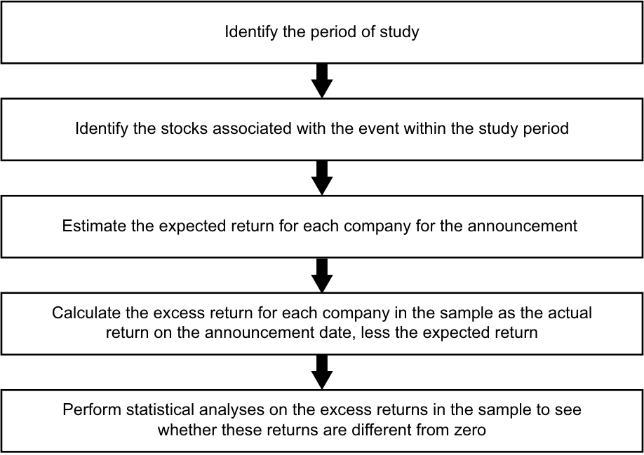
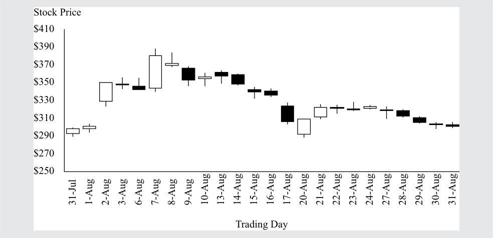

Learning Module 3 Market Efficiency - Part 1: Introduction
Volume 5: Equity Investments
Learning Module 3 Market Efficiency
Part 1/3: Introduction (PDF Pages 133–148)
Tập 5: Đầu tư Cổ phiếu (Volume 5: Equity Investments)
Học phần 3: Hiệu quả Thị trường (Learning Module 3: Market Efficiency)
Phần 1/3: Giới thiệu (Introduction) (Trang PDF 133–148)
L E A R N I N G M O D U L E
H Ọ C P H Ầ N
3
3
Market Efficiency
Hiệu quả Thị trường (Market Efficiency)
by Sean Cleary, PhD, CFA, Howard J. Atkinson, CIMA, ICD.D, CFA, and Pamela Peterson Drake, PhD, CFA.
bởi Sean Cleary, PhD, CFA, Howard J. Atkinson, CIMA, ICD.D, CFA, và Pamela Peterson Drake, PhD, CFA.
Sean Cleary, PhD, CFA, is at Queen’s University (Canada). Howard J. Atkinson, CIMA, ICD.D, CFA, is at Horizons ETF Management (Canada) Inc. (Canada). Pamela Peterson Drake, PhD, CFA, is at James Madison University (USA).
Sean Cleary, PhD, CFA, làm việc tại Đại học Queen’s (Canada). Howard J. Atkinson, CIMA, ICD.D, CFA, làm việc tại Horizons ETF Management (Canada) Inc. (Canada). Pamela Peterson Drake, PhD, CFA, làm việc tại Đại học James Madison (Hoa Kỳ).
LEARNING OUTCOMES
KẾT QUẢ HỌC TẬP (LEARNING OUTCOMES)
Mastery The candidate should be able to: describe market efficiency and related concepts, including their importance to investment practitioners contrast market value and intrinsic value explain factors that affect a market’s efficiency contrast weak-form, semi-strong-form, and strong-form market efficiency explain the implications of each form of market efficiency for fundamental analysis, technical analysis, and the choice between active and passive portfolio management describe market anomalies describe behavioral finance and its potential relevance to understanding market anomalies
Mức độ thành thạo (Mastery) — Ứng viên cần có khả năng: - mô tả hiệu quả thị trường (market efficiency) và các khái niệm liên quan, bao gồm tầm quan trọng của chúng đối với những người hành nghề đầu tư - đối chiếu giữa giá trị thị trường (market value) và giá trị nội tại (intrinsic value) - giải thích các yếu tố ảnh hưởng đến tính hiệu quả của một thị trường - đối chiếu hiệu quả thị trường dạng yếu (weak-form), dạng bán mạnh (semi-strong-form), và dạng mạnh (strong-form) - giải thích hàm ý của từng dạng hiệu quả thị trường đối với phân tích cơ bản (fundamental analysis), phân tích kỹ thuật (technical analysis), và sự lựa chọn giữa quản lý danh mục đầu tư chủ động và thụ động - mô tả các bất thường thị trường (market anomalies) - mô tả tài chính hành vi (behavioral finance) và sự liên quan tiềm tàng của nó đối với việc thấu hiểu các bất thường thị trường
Chú thích hình ảnh: Mục 1
INTRODUCTION
GIỚI THIỆU (INTRODUCTION)
Market efficiency concerns the extent to which market prices incorporate available information. If market prices do not fully incorporate information, then opportunities may exist to make a profit from the gathering and processing of information. The subject of market efficiency is, therefore, of great interest to investment managers, as illustrated in Example 1.
Hiệu quả thị trường (Market efficiency) liên quan đến mức độ mà giá thị trường phản ánh các thông tin hiện có. Nếu giá thị trường không phản ánh đầy đủ thông tin, thì có thể tồn tại những cơ hội kiếm lời từ việc thu thập và xử lý thông tin. Do đó, chủ đề về hiệu quả thị trường được các nhà quản lý đầu tư vô cùng quan tâm, như được minh họa trong Ví dụ 1.
EXAMPLE 1
VÍ DỤ 1 (EXAMPLE 1)
Market Efficiency and Active Manager Selection
Hiệu quả Thị trường và Lựa chọn Nhà quản lý Chủ động (Market Efficiency and Active Manager Selection)
- The chief investment officer (CIO) of a major university endowment fund has listed eight steps in the active manager selection process that can be applied both to traditional investments (e.g., common equity and fixed-income securities) and to alternative investments (e.g., private equity, hedge funds, and real assets). The first step specified is the evaluation of market opportunity:
- Giám đốc đầu tư (chief investment officer – CIO) của một quỹ hiến tặng đại học lớn đã liệt kê tám bước trong quy trình lựa chọn nhà quản lý chủ động có thể được áp dụng cho cả các khoản đầu tư truyền thống (ví dụ: cổ phiếu phổ thông và chứng khoán thu nhập cố định) lẫn các khoản đầu tư thay thế (ví dụ: vốn cổ phần tư nhân, quỹ phòng hộ, và tài sản thực). Bước đầu tiên được chỉ định là đánh giá cơ hội thị trường:
What is the opportunity and why is it there? To answer this question, we start by studying capital markets and the types of managers operating within those markets. We identify market inefficiencies and try to understand their causes, such as regulatory structures or behavioral biases. We can rule out many broad groups of managers and strategies by simply determining that the degree of market inefficiency necessary to support a strategy is implausible. Importantly, we consider the past history of active returns meaningless unless we understand why markets will allow those active returns to continue into the future.1
Cơ hội là gì và tại sao nó lại ở đó? Để trả lời câu hỏi này, chúng tôi bắt đầu bằng việc nghiên cứu các thị trường vốn và các kiểu nhà quản lý đang hoạt động trong những thị trường đó. Chúng tôi xác định những sự kém hiệu quả của thị trường (market inefficiencies) và cố gắng hiểu nguyên nhân của chúng, chẳng hạn như các cấu trúc pháp lý hoặc các thiên lệch hành vi (behavioral biases). Chúng tôi có thể loại bỏ nhiều nhóm nhà quản lý và chiến lược rộng lớn chỉ đơn giản bằng cách xác định rằng mức độ kém hiệu quả của thị trường cần thiết để hỗ trợ cho một chiến lược là không hợp lý. Quan trọng là, chúng tôi coi lịch sử tỷ suất sinh lợi chủ động (active returns) trong quá khứ là vô nghĩa trừ khi chúng tôi hiểu tại sao thị trường sẽ cho phép những tỷ suất sinh lợi chủ động đó tiếp diễn trong tương lai.1
The CIO’s description underscores the importance of not assuming that past active returns that might be found in a historical dataset will repeat themselves in the future. Active returns refer to returns earned by strategies that do not assume that all information is fully reflected in market prices.
Mô tả của vị CIO nhấn mạnh tầm quan trọng của việc không mặc định rằng các tỷ suất sinh lợi chủ động trong quá khứ có thể tìm thấy trong một bộ dữ liệu lịch sử sẽ tự lặp lại trong tương lai. Tỷ suất sinh lợi chủ động (Active returns) đề cập đến tỷ suất sinh lợi kiếm được bởi các chiến lược không giả định rằng tất cả thông tin đều đã được phản ánh đầy đủ vào giá thị trường.
Governments and market regulators also care about the extent to which market prices incorporate information. Efficient markets imply informative prices—prices that accurately reflect available information about fundamental values. In market-based economies, market prices help determine which companies (and which projects) obtain capital. If these prices do not efficiently incorporate information about a company’s prospects, then it is possible that funds will be misdirected. By contrast, prices that are informative help direct scarce resources and funds available for investment to their highest-valued uses.2 Informative prices thus promote economic growth. The efficiency of a country’s capital markets (in which businesses raise financing) is an important characteristic of a well-functioning financial system.
Các chính phủ và các cơ quan quản lý thị trường cũng quan tâm đến mức độ mà giá thị trường phản ánh thông tin. Thị trường hiệu quả hàm ý mức giá mang tính thông tin (informative prices)—mức giá phản ánh chính xác thông tin hiện có về các giá trị cơ bản (fundamental values). Trong các nền kinh tế dựa trên thị trường, giá thị trường giúp xác định những công ty nào (và những dự án nào) huy động được vốn. Nếu những mức giá này không phản ánh một cách hiệu quả thông tin về triển vọng của một công ty, thì có khả năng nguồn vốn sẽ bị phân bổ sai hướng. Ngược lại, mức giá mang tính thông tin giúp định hướng các nguồn lực khan hiếm và các nguồn vốn sẵn có cho đầu tư đến những nơi sử dụng có giá trị cao nhất.2 Do đó, mức giá mang tính thông tin thúc đẩy tăng trưởng kinh tế. Tính hiệu quả của thị trường vốn của một quốc gia (nơi các doanh nghiệp huy động nguồn tài trợ) là một đặc điểm quan trọng của một hệ thống tài chính vận hành tốt.
The remainder of this reading is organized as follows. Section 2 provides specifics on how the efficiency of an asset market is described and discusses the factors affecting (i.e., contributing to and impeding) market efficiency. Section 3 presents an influential three-way classification of the efficiency of security markets and discusses its implications for fundamental analysis, technical analysis, and portfolio management. Section 4 presents several market anomalies (apparent market inefficiencies that have received enough attention to be individually identified and named) and describes how these anomalies relate to investment strategies. Section 5 introduces behavioral finance and how that field of study relates to market efficiency. A summary concludes the reading.
Phần còn lại của bài đọc này được tổ chức như sau. Phần 2 cung cấp chi tiết về cách mô tả tính hiệu quả của một thị trường tài sản, và Phần 3 thảo luận về các yếu tố ảnh hưởng (tức là đóng góp vào và cản trở) hiệu quả thị trường. Phần 4 và Phần 5 trình bày cách phân loại ba dạng có tầm ảnh hưởng sâu rộng về tính hiệu quả của thị trường chứng khoán và thảo luận về các hàm ý của nó đối với phân tích cơ bản, phân tích kỹ thuật, và quản lý danh mục đầu tư. Phần 6 và Phần 7 trình bày một số bất thường thị trường (market anomalies — những sự kém hiệu quả bề ngoài của thị trường đã nhận được đủ sự chú ý để được nhận diện và đặt tên riêng) và mô tả cách các bất thường này liên hệ với các chiến lược đầu tư. Phần 8 giới thiệu về tài chính hành vi và cách lĩnh vực nghiên cứu đó liên hệ với hiệu quả thị trường. Một bản tóm tắt sẽ khép lại bài đọc.
1 The CIO is Christopher J. Brightman, CFA, of the University of Virginia Investment Management Company, as reported in Yau, Schneeweis, Robinson, and Weiss (2007, pp. 481–482). 2 This concept is known as allocative efficiency.
1 Vị CIO này là Christopher J. Brightman, CFA, thuộc Công ty Quản lý Đầu tư Đại học Virginia, như được báo cáo trong Yau, Schneeweis, Robinson, và Weiss (2007, tr. 481–482). 2 Khái niệm này được gọi là hiệu quả phân bổ (allocative efficiency).
THE CONCEPT OF MARKET EFFICIENCY
KHÁI NIỆM VỀ HIỆU QUẢ THỊ TRƯỜNG (THE CONCEPT OF MARKET EFFICIENCY)
2
2
describe market efficiency and related concepts, including their importance to investment practitioners
mô tả hiệu quả thị trường (market efficiency) và các khái niệm liên quan, bao gồm tầm quan trọng của chúng đối với những người hành nghề đầu tư
contrast market value and intrinsic value
đối chiếu giữa giá trị thị trường (market value) và giá trị nội tại (intrinsic value)
The Description of Efficient Markets
Mô tả về các Thị trường Hiệu quả (The Description of Efficient Markets)
An informationally efficient market (an efficient market ) is a market in which asset prices reflect new information quickly and rationally. An efficient market is thus a market in which asset prices reflect all past and present information.3
Một thị trường hiệu quả về mặt thông tin (informationally efficient market) (gọi tắt là thị trường hiệu quả [efficient market]) là một thị trường trong đó giá tài sản phản ánh thông tin mới một cách nhanh chóng và hợp lý. Do đó, một thị trường hiệu quả là một thị trường trong đó giá tài sản phản ánh tất cả các thông tin trong quá khứ và hiện tại.3
In this section we expand on this definition by clarifying the time frame required for an asset’s price to incorporate information as well as describing the elements of information releases assumed under market efficiency. We discuss the difference between market value and intrinsic value and illustrate how inefficiencies or discrepancies between these values can provide profitable opportunities for active investment. As financial markets are generally not considered being either completely efficient or inefficient, but rather falling within a range between the two extremes, we describe a number of factors that contribute to and impede the degree of efficiency of a financial market. Finally, we conclude our overview of market efficiency by illustrating how the costs incurred by traders in identifying and exploiting possible market inefficiencies affect how we interpret market efficiency.
Trong phần này, chúng ta mở rộng định nghĩa này bằng cách làm rõ khung thời gian cần thiết để giá của một tài sản phản ánh thông tin cũng như mô tả các yếu tố của việc công bố thông tin được giả định dưới hiệu quả thị trường. Chúng ta thảo luận về sự khác biệt giữa giá trị thị trường và giá trị nội tại, đồng thời minh họa cách những sự kém hiệu quả hoặc sự chênh lệch giữa các giá trị này có thể mang lại cơ hội sinh lời cho đầu tư chủ động. Bởi vì các thị trường tài chính nhìn chung không được coi là hoàn toàn hiệu quả hay hoàn toàn kém hiệu quả, mà thay vào đó nằm trong một dải giữa hai thái cực này, chúng ta mô tả một số yếu tố đóng góp vào và cản trở mức độ hiệu quả của một thị trường tài chính. Cuối cùng, chúng ta kết thúc phần tổng quan về hiệu quả thị trường bằng cách minh họa cách các chi phí mà các nhà giao dịch phải gánh chịu trong việc xác định và khai thác những sự kém hiệu quả có thể có của thị trường ảnh hưởng đến cách chúng ta diễn giải hiệu quả thị trường.
Investment managers and analysts, as noted, are interested in market efficiency because the extent to which a market is efficient affects how many profitable trading opportunities (market inefficiencies) exist. Consistent, superior, risk-adjusted returns (net of all expenses) are not achievable in an efficient market.4 In an efficient market, a passive investment strategy (i.e., buying and holding a broad market portfolio) that does not seek superior risk-adjusted returns can be preferred to an active investment strategy because of lower costs (for example, transaction and information-seeking costs). By contrast, in a very inefficient market, opportunities may exist for an active investment strategy to achieve superior risk-adjusted returns (net of all expenses in executing the strategy) as compared with a passive investment strategy. In inefficient markets, an active investment strategy may outperform a passive investment strategy on a risk-adjusted basis. Understanding the characteristics of an efficient market and being able to evaluate the efficiency of a particular market are important topics for investment analysts and portfolio managers.
Các nhà quản lý đầu tư và các nhà phân tích, như đã lưu ý, quan tâm đến hiệu quả thị trường bởi vì mức độ hiệu quả của một thị trường ảnh hưởng đến số lượng cơ hội giao dịch có lời (sự kém hiệu quả của thị trường) đang tồn tại. Tỷ suất sinh lợi vượt trội, nhất quán, đã điều chỉnh theo rủi ro (sau khi trừ mọi chi phí) là không thể đạt được trong một thị trường hiệu quả.4 Trong một thị trường hiệu quả, một chiến lược đầu tư thụ động (passive investment) (tức là mua và nắm giữ một danh mục thị trường rộng) vốn không tìm kiếm tỷ suất sinh lợi vượt trội điều chỉnh theo rủi ro có thể được ưa thích hơn so với một chiến lược đầu tư chủ động (active investment) do có chi phí thấp hơn (ví dụ: chi phí giao dịch và chi phí tìm kiếm thông tin). Ngược lại, trong một thị trường rất kém hiệu quả, các cơ hội có thể tồn tại để một chiến lược đầu tư chủ động đạt được tỷ suất sinh lợi vượt trội điều chỉnh theo rủi ro (sau khi trừ mọi chi phí thực hiện chiến lược) so với chiến lược đầu tư thụ động. Trong các thị trường kém hiệu quả, một chiến lược đầu tư chủ động có thể có thành quả vượt trội hơn một chiến lược đầu tư thụ động trên cơ sở điều chỉnh theo rủi ro. Việc hiểu rõ các đặc điểm của một thị trường hiệu quả và có khả năng đánh giá tính hiệu quả của một thị trường cụ thể là những chủ đề quan trọng đối với các nhà phân tích đầu tư và các nhà quản lý danh mục đầu tư.
An efficient market is a market in which asset prices reflect information quickly. But what is the time frame of “quickly”? Trades are the mechanism by which information can be incorporated into asset transaction prices. The time needed to execute trades to exploit an inefficiency may provide a baseline for judging speed of adjustment.5
Một thị trường hiệu quả là một thị trường trong đó giá tài sản phản ánh thông tin một cách nhanh chóng. Nhưng khung thời gian của từ “nhanh chóng” là bao lâu? Các giao dịch (trades) là cơ chế mà qua đó thông tin có thể được đưa vào giá giao dịch của tài sản. Thời gian cần thiết để thực hiện các giao dịch nhằm khai thác một sự kém hiệu quả có thể cung cấp một mốc cơ sở để đánh giá tốc độ điều chỉnh.5
3 This definition is convenient for making several instructional points. The definition that most simply explains the sense of the word efficient in this context can be found in Fama (1976): “An efficient capital market is a market that is efficient in processing information” (p. 134).
3 Định nghĩa này thuận tiện cho việc trình bày một số điểm mang tính giảng dạy. Định nghĩa giải thích đơn giản nhất ý nghĩa của từ hiệu quả (efficient) trong bối cảnh này có thể được tìm thấy trong Fama (1976): “Một thị trường vốn hiệu quả là một thị trường có hiệu quả trong việc xử lý thông tin” (tr. 134).
4 The technical term for superior in this context is positive abnormal in the sense of higher than expected given the asset’s risk (as measured, according to capital market theory, by the asset’s contribution to the risk of a well-diversified portfolio).
4 Thuật ngữ kỹ thuật cho từ vượt trội (superior) trong bối cảnh này là bất thường dương (positive abnormal) theo nghĩa cao hơn mức kỳ vọng dựa trên rủi ro của tài sản (được đo lường, theo lý thuyết thị trường vốn, bằng sự đóng góp của tài sản đó vào rủi ro của một danh mục đầu tư được đa dạng hóa tốt).
5 Although the original theory of market efficiency does not quantify this speed, the basic idea is that it is sufficiently swift to make it impossible to consistently earn abnormal profits. Chordia, Roll, and Subrahmanyam (2005) suggest that the adjustment to information on the New York Stock Exchange (NYSE) is between 5 and 60 minutes.
5 Mặc dù lý thuyết ban đầu về hiệu quả thị trường không định lượng tốc độ này, ý tưởng cơ bản là nó đủ nhanh để khiến việc kiếm được lợi nhuận bất thường một cách nhất quán trở nên bất khả thi. Chordia, Roll, và Subrahmanyam (2005) cho rằng sự điều chỉnh theo thông tin trên Sàn Giao dịch Chứng khoán New York (NYSE) là từ 5 đến 60 phút.
The time frame for an asset’s price to incorporate information must be at least as long as the shortest time a trader needs to execute a transaction in the asset. In certain markets, such as foreign exchange and developed equity markets, market efficiency relative to certain types of information has been studied using time frames as short as one minute or less. If the time frame of price adjustment allows many traders to earn profits with little risk, then the market is relatively inefficient. These considerations lead to the observation that market efficiency can be viewed as falling on a continuum.
Khung thời gian để giá của một tài sản phản ánh thông tin ít nhất phải dài bằng khoảng thời gian ngắn nhất mà một nhà giao dịch cần để thực hiện một giao dịch đối với tài sản đó. Ở một số thị trường nhất định, chẳng hạn như thị trường ngoại hối và các thị trường cổ phiếu phát triển, hiệu quả thị trường liên quan đến một số loại thông tin nhất định đã được nghiên cứu bằng cách sử dụng các khung thời gian ngắn chỉ một phút hoặc ít hơn. Nếu khung thời gian điều chỉnh giá cho phép nhiều nhà giao dịch kiếm được lợi nhuận với rất ít rủi ro, thì thị trường đó là tương đối kém hiệu quả. Những cân nhắc này dẫn đến nhận xét rằng hiệu quả thị trường có thể được xem như nằm trên một dải liên tục (continuum).
Finally, an important point is that in an efficient market, prices should be expected to react only to the elements of information releases that are not anticipated fully by investors—that is, to the “unexpected” or “surprise” element of such releases. Investors process the unexpected information and revise expectations (for example, about an asset’s future cash flows, risk, or required rate of return) accordingly. The revised expectations enter or get incorporated in the asset price through trades in the asset. Market participants who process the news and believe that at the current market price an asset does not offer sufficient compensation for its perceived risk will tend to sell it or even sell it short. Market participants with opposite views should be buyers. In this way the market establishes the price that balances the various opinions after expectations are revised.
Cuối cùng, một điểm quan trọng là trong một thị trường hiệu quả, giá chỉ được kỳ vọng sẽ phản ứng với những yếu tố của các đợt công bố thông tin chưa được các nhà đầu tư dự đoán trước một cách đầy đủ—nghĩa là chỉ phản ứng với yếu tố “ngoài kỳ vọng” (“unexpected”) hoặc “bất ngờ” (“surprise”) của các thông báo đó. Các nhà đầu tư xử lý thông tin ngoài kỳ vọng và điều chỉnh lại các kỳ vọng (ví dụ: về dòng tiền tương lai, rủi ro, hoặc tỷ suất sinh lợi yêu cầu của một tài sản) cho phù hợp. Các kỳ vọng đã điều chỉnh sẽ đi vào hoặc được phản ánh vào giá tài sản thông qua các giao dịch đối với tài sản đó. Những người tham gia thị trường xử lý tin tức và tin rằng ở mức giá thị trường hiện tại, một tài sản không mang lại sự đền bù thỏa đáng cho rủi ro cảm nhận được của nó sẽ có xu hướng bán nó ra hoặc thậm chí bán khống nó. Những người tham gia thị trường có quan điểm ngược lại sẽ là người mua. Bằng cách này, thị trường thiết lập nên mức giá cân bằng các quan điểm khác nhau sau khi các kỳ vọng được điều chỉnh.
EXAMPLE 2
VÍ DỤ 2 (EXAMPLE 2)
Price Reaction to the Default on a Bond Issue
Phản ứng của Giá đối với việc Vỡ nợ một Đợt Phát hành Trái phiếu (Price Reaction to the Default on a Bond Issue)
Suppose that a speculative-grade bond issuer announces, just before bond markets open, that it will default on an upcoming interest payment. In the announcement, the issuer confirms various reports made in the financial media in the period leading up to the announcement. Prior to the issuer’s announcement, the financial news media reported the following: 1) suppliers of the company were making deliveries only for cash payment, reducing the company’s liquidity; 2) the issuer’s financial condition had probably deteriorated to the point that it lacked the cash to meet an upcoming interest payment; and 3) although public capital markets were closed to the company, it was negotiating with a bank for a private loan that would permit it to meet its interest payment and continue operations for at least nine months. If the issuer defaults on the bond, the consensus opinion of analysts is that bondholders will recover approximately $0.36 to $0.38 per dollar face value.
Giả sử rằng một tổ chức phát hành trái phiếu hạng đầu cơ (speculative-grade bond) thông báo, ngay trước khi thị trường trái phiếu mở cửa, rằng họ sẽ vỡ nợ đối với khoản thanh toán tiền lãi sắp tới. Trong thông báo, tổ chức phát hành xác nhận các báo cáo khác nhau đã được đưa tin trên các phương tiện truyền thông tài chính trong giai đoạn trước khi có thông báo. Trước thông báo của tổ chức phát hành, truyền thông tin tức tài chính đã đưa tin như sau: 1) các nhà cung cấp của công ty chỉ giao hàng khi được thanh toán bằng tiền mặt, làm giảm tính thanh khoản của công ty; 2) tình trạng tài chính của tổ chức phát hành có lẽ đã xấu đi đến mức không có đủ tiền mặt để đáp ứng khoản thanh toán tiền lãi sắp tới; và 3) mặc dù các thị trường vốn đại chúng đã đóng cửa đối với công ty, công ty đang đàm phán với một ngân hàng về một khoản vay tư nhân cho phép công ty đáp ứng khoản thanh toán tiền lãi và tiếp tục hoạt động trong ít nhất chín tháng. Nếu tổ chức phát hành vỡ nợ đối với trái phiếu, ý kiến đồng thuận của các nhà phân tích là các trái chủ sẽ thu hồi được xấp xỉ $\$0,36$ đến $\$0,38$ trên mỗi đô la mệnh giá.
- If the market for the bond is efficient, the bond’s market price is most likely to fully reflect the bond’s value after default:
-
A. in the period leading up to the announcement.
-
B. in the first trade prices after the market opens on the announcement day.
-
C. when the issuer actually misses the payment on the interest payment date.
- Nếu thị trường của trái phiếu này là hiệu quả, giá thị trường của trái phiếu có nhiều khả năng nhất sẽ phản ánh đầy đủ giá trị của trái phiếu sau khi vỡ nợ:
-
A. trong giai đoạn trước khi có thông báo.
-
B. ngay trong các mức giá giao dịch đầu tiên sau khi thị trường mở cửa vào ngày ra thông báo.
-
C. khi tổ chức phát hành thực sự bỏ lỡ khoản thanh toán vào ngày thanh toán tiền lãi.
Solution:
Lời giải:
B is correct. The announcement removed any uncertainty about default. In the period leading up to the announcement, the bond’s market price incorporated a probability of default, but the price would not have fully reflected the bond’s value after default. The possibility that a bank loan might permit the company to avoid default was not eliminated until the announcement.
B đúng. Thông báo này đã loại bỏ mọi sự không chắc chắn về việc vỡ nợ. Trong giai đoạn trước khi có thông báo, giá thị trường của trái phiếu đã phản ánh một xác suất vỡ nợ, nhưng mức giá đó sẽ chưa phản ánh đầy đủ giá trị của trái phiếu sau khi vỡ nợ. Khả năng một khoản vay ngân hàng có thể cho phép công ty tránh được vỡ nợ vẫn chưa bị loại bỏ cho đến khi có thông báo chính thức.
- If the market for the bond is efficient, the piece of information that bond investors most likely focus on in the issuer’s announcement is that the issuer had:
-
A. failed in its negotiations for a bank loan.
-
B. lacked the cash to meet the upcoming interest payment.
-
C. been required to make cash payments for supplier deliveries.
- Nếu thị trường của trái phiếu này là hiệu quả, mẩu thông tin mà các nhà đầu tư trái phiếu có nhiều khả năng nhất tập trung vào trong thông báo của tổ chức phát hành là việc tổ chức phát hành đã:
-
A. thất bại trong các cuộc đàm phán vay vốn ngân hàng.
-
B. thiếu tiền mặt để đáp ứng khoản thanh toán tiền lãi sắp tới.
-
C. bị yêu cầu phải thanh toán bằng tiền mặt khi nhà cung cấp giao hàng.
Solution:
Lời giải:
A is correct. The failure of the loan negotiations first becomes known in this announcement. The failure implies default.
A đúng. Sự thất bại của các cuộc đàm phán vay vốn lần đầu tiên được biết đến trong thông báo này. Sự thất bại này đồng nghĩa với việc vỡ nợ chắc chắn xảy ra.
Market Value versus Intrinsic Value
Giá trị Thị trường so với Giá trị Nội tại (Market Value versus Intrinsic Value)
Market value is the price at which an asset can currently be bought or sold. Intrinsic value (sometimes called fundamental value ) is, broadly speaking, the value that would be placed on it by investors if they had a complete understanding of the asset’s investment characteristics.6 For a bond, for example, such information would include its interest (coupon) rate, principal value, the timing of its interest and principal payments, the other terms of the bond contract (indenture), a precise understanding of its default risk, the liquidity of its market, and other issue-specific items. In addition, market variables such as the term structure of interest rates and the size of various market premiums applying to the issue (for default risk, etc.) would enter into a discounted cash flow estimate of the bond’s intrinsic value (discounted cash flow models are often used for such estimates). The word estimate is used because in practice, intrinsic value can be estimated but is not known for certain.
Giá trị thị trường (Market value) là mức giá mà tại đó một tài sản hiện có thể được mua hoặc bán. Giá trị nội tại (Intrinsic value) (đôi khi được gọi là giá trị cơ bản [fundamental value]), hiểu theo nghĩa rộng, là giá trị sẽ được các nhà đầu tư đặt cho tài sản đó nếu họ có sự hiểu biết hoàn chỉnh về các đặc điểm đầu tư của tài sản.6 Ví dụ, đối với một trái phiếu, thông tin đó sẽ bao gồm lãi suất (coupon), giá trị mệnh giá gốc, thời điểm thanh toán tiền lãi và nợ gốc, các điều khoản khác của hợp đồng trái phiếu (indenture), sự hiểu biết chính xác về rủi ro vỡ nợ của nó, tính thanh khoản của thị trường giao dịch nó, và các khoản mục cụ thể khác của đợt phát hành. Ngoài ra, các biến số thị trường như cấu trúc kỳ hạn của lãi suất (term structure of interest rates) và quy mô của các phần bù thị trường khác nhau áp dụng cho đợt phát hành (đối với rủi ro vỡ nợ, v.v.) sẽ được đưa vào phép ước tính dòng tiền chiết khấu (discounted cash flow) cho giá trị nội tại của trái phiếu (các mô hình dòng tiền chiết khấu thường được sử dụng cho các ước tính như vậy). Từ ước tính (estimate) được sử dụng bởi vì trên thực tế, giá trị nội tại có thể được ước tính nhưng không thể biết được một cách chắc chắn tuyệt đối.
If investors believe a market is highly efficient , they will usually accept market prices as accurately reflecting intrinsic values. Discrepancies between market price and intrinsic value are the basis for profitable active investment. Active investors seek to own assets selling below perceived intrinsic value in the marketplace and to sell or sell short assets selling above perceived intrinsic value.
Nếu các nhà đầu tư tin rằng một thị trường có tính hiệu quả cao, họ thường sẽ chấp nhận giá thị trường như là sự phản ánh chính xác các giá trị nội tại. Sự chênh lệch giữa giá thị trường và giá trị nội tại là cơ sở cho hoạt động đầu tư chủ động sinh lời. Các nhà đầu tư chủ động tìm cách sở hữu các tài sản đang được bán dưới mức giá trị nội tại cảm nhận được trên thị trường và bán hoặc bán khống các tài sản đang được bán trên mức giá trị nội tại cảm nhận được.
If investors believe an asset market is relatively inefficient , they may try to develop an independent estimate of intrinsic value. The challenge for investors and analysts is estimating an asset’s intrinsic value. Numerous theories and models, including the dividend discount model, can be used to estimate an asset’s intrinsic value, but they all require some form of judgment regarding the size, timing, and riskiness of the future cash flows associated with the asset. The more complex an asset’s future cash flows, the more difficult it is to estimate its intrinsic value. These complexities and the estimates of an asset’s market value are reflected in the market through the buying and selling of assets. The market value of an asset represents the intersection of supply and demand—the point that is low enough to induce at least one investor to buy while being high enough to induce at least one investor to sell. Because information relevant to valuation flows continually to investors, estimates of intrinsic value change, and hence, market values change.
Nếu các nhà đầu tư tin rằng một thị trường tài sản là tương đối kém hiệu quả, họ có thể cố gắng xây dựng một ước tính độc lập về giá trị nội tại. Thách thức đối với các nhà đầu tư và các nhà phân tích là ước tính giá trị nội tại của một tài sản. Rất nhiều lý thuyết và mô hình, bao gồm mô hình chiết khấu cổ tức (dividend discount model), có thể được sử dụng để ước tính giá trị nội tại của một tài sản, nhưng tất cả chúng đều đòi hỏi một số hình thức phán đoán liên quan đến quy mô, thời điểm, và mức độ rủi ro của các dòng tiền tương lai gắn liền với tài sản đó. Các dòng tiền tương lai của một tài sản càng phức tạp thì việc ước tính giá trị nội tại của nó càng khó khăn. Những sự phức tạp này và các ước tính về giá trị của một tài sản được phản ánh trên thị trường thông qua hoạt động mua và bán tài sản. Giá trị thị trường của một tài sản đại diện cho giao điểm của cung và cầu—điểm đủ thấp để thuyết phục ít nhất một nhà đầu tư mua vào đồng thời đủ cao để thuyết phục ít nhất một nhà đầu tư bán ra. Bởi vì thông tin liên quan đến việc định giá liên tục chảy đến các nhà đầu tư, các ước tính về giá trị nội tại thay đổi, và do đó, giá trị thị trường cũng thay đổi.
EXAMPLE 3
VÍ DỤ 3 (EXAMPLE 3)
Intrinsic Value
Giá trị Nội tại (Intrinsic Value)
- An analyst estimates that a security’s intrinsic value is lower than its market value. The security appears to be:
-
A. undervalued.
-
B. fairly valued.
-
C. overvalued.
- Một nhà phân tích ước tính rằng giá trị nội tại của một chứng khoán thấp hơn giá trị thị trường của nó. Chứng khoán này có vẻ đang:
-
A. bị định giá thấp (undervalued).
-
B. được định giá hợp lý (fairly valued).
-
C. bị định giá cao (overvalued).
Solution:
Lời giải:
C is correct. The market is valuing the asset at more than its true worth.
C đúng. Thị trường đang định giá tài sản này cao hơn giá trị thực của nó.
- A market in which assets’ market values are, on average, equal to or nearly equal to intrinsic values is best described as a market that is attractive for:
-
A. active investment.
-
B. passive investment.
-
C. both active and passive investment.
- Một thị trường trong đó giá trị thị trường của các tài sản, tính trung bình, bằng hoặc gần bằng với giá trị nội tại được mô tả đúng nhất là một thị trường hấp dẫn đối với:
-
A. đầu tư chủ động (active investment).
-
B. đầu tư thụ động (passive investment).
-
C. cả đầu tư chủ động và đầu tư thụ động.
Solution:
Lời giải:
B is correct because an active investment is not expected to earn superior risk-adjusted returns if the market is efficient. The additional costs of active investment are not justified in such a market.
B đúng bởi vì một khoản đầu tư chủ động không được kỳ vọng sẽ kiếm được tỷ suất sinh lợi vượt trội điều chỉnh theo rủi ro nếu thị trường là hiệu quả. Các chi phí tăng thêm của việc đầu tư chủ động là không đáng để bỏ ra trong một thị trường như vậy.
- Suppose that the future cash flows of an asset are accurately estimated. The asset trades in a market that you believe is efficient based on most evidence, but your estimate of the asset’s intrinsic value exceeds the asset’s market value by a moderate amount. The most likely conclusion is that you have:
-
A. overestimated the asset’s risk.
-
B. underestimated the asset’s risk.
-
C. identified a market inefficiency.
- Giả sử rằng các dòng tiền tương lai của một tài sản được ước tính một cách chính xác. Tài sản này giao dịch trên một thị trường mà bạn tin là hiệu quả dựa trên hầu hết các bằng chứng, nhưng ước tính của bạn về giá trị nội tại của tài sản lại vượt quá giá trị thị trường của tài sản một mức vừa phải. Kết luận có nhiều khả năng nhất là bạn đã:
-
A. đánh giá quá cao rủi ro của tài sản.
-
B. đánh giá quá thấp rủi ro của tài sản.
-
C. xác định được một sự kém hiệu quả của thị trường.
Solution:
Lời giải:
B is correct. If risk is underestimated, the discount rate being applied to find the present value of the expected cash flows (estimated intrinsic value) will be too low and the intrinsic value estimate will be too high.
B đúng. Nếu rủi ro bị đánh giá quá thấp (underestimated), lãi suất chiết khấu được áp dụng để tìm giá trị hiện tại của các dòng tiền kỳ vọng (giá trị nội tại ước tính) sẽ quá thấp và ước tính giá trị nội tại sẽ quá cao.
3
3
FACTORS AFFECTING MARKET EFFICIENCY INCLUDING TRADING COSTS
CÁC YẾU TỐ ẢNH HƯỞNG ĐẾN HIỆU QUẢ THỊ TRƯỜNG BAO GỒM CHI PHÍ GIAO DỊCH (FACTORS AFFECTING MARKET EFFICIENCY INCLUDING TRADING COSTS)
describe market efficiency and related concepts, including their importance to investment practitioners explain factors that affect a market’s efficiency
mô tả hiệu quả thị trường (market efficiency) và các khái niệm liên quan, bao gồm tầm quan trọng của chúng đối với những người hành nghề đầu tư
giải thích các yếu tố ảnh hưởng đến tính hiệu quả của một thị trường
For markets to be efficient, prices should adjust quickly and rationally to the release of new information. In other words, prices of assets in an efficient market should “fully reflect” all information. Financial markets, however, are generally not classified at the two extremes as either completely inefficient or completely efficient but, rather, as exhibiting various degrees of efficiency. In other words, market efficiency should be viewed as falling on a continuum between extremes of completely efficient, at one end, and completely inefficient, at the other. Asset prices in a highly efficient market, by definition, reflect information more quickly and more accurately than in a less-efficient market. These degrees of efficiency also vary through time, across geographical markets, and by type of market. A number of factors contribute to and impede the degree of efficiency in a financial market.
Để các thị trường có hiệu quả, giá cả phải điều chỉnh nhanh chóng và hợp lý trước việc công bố thông tin mới. Nói cách khác, giá của các tài sản trong một thị trường hiệu quả phải “phản ánh đầy đủ” (“fully reflect”) mọi thông tin. Tuy nhiên, các thị trường tài chính nhìn chung không được phân loại ở hai thái cực là hoàn toàn kém hiệu quả hoặc hoàn toàn hiệu quả mà thay vào đó thể hiện các mức độ hiệu quả khác nhau. Nói cách khác, hiệu quả thị trường nên được xem như nằm trên một dải liên tục (continuum) giữa hai thái cực: hoàn toàn hiệu quả ở một đầu, và hoàn toàn kém hiệu quả ở đầu kia. Giá tài sản trong một thị trường có tính hiệu quả cao, theo định nghĩa, phản ánh thông tin nhanh hơn và chính xác hơn so với trong một thị trường kém hiệu quả hơn. Các mức độ hiệu quả này cũng thay đổi theo thời gian, giữa các thị trường địa lý khác nhau, và theo loại thị trường. Một số yếu tố đóng góp vào và cản trở mức độ hiệu quả trong một thị trường tài chính.
Market Participants
Những Người Tham gia Thị trường (Market Participants)
One of the most critical factors contributing to the degree of efficiency in a market is the number of market participants. Consider the following example that illustrates the relationship between the number of market participants and market efficiency.
Một trong những yếu tố quan trọng nhất đóng góp vào mức độ hiệu quả trong một thị trường là số lượng người tham gia thị trường. Hãy xem xét ví dụ sau đây minh họa mối quan hệ giữa số lượng người tham gia thị trường và hiệu quả thị trường.
EXAMPLE 4
VÍ DỤ 4 (EXAMPLE 4)
Illustration of Market Efficiency
Minh họa về Hiệu quả Thị trường (Illustration of Market Efficiency)
Assume that the shares of a small market capitalization (cap) company trade on a public stock exchange. Because of its size, it is not considered “blue-chip” and not many professional investors follow the activities of the company.7 A smallcap fund analyst reports that the most recent annual operating performance of the company has been surprisingly good, considering the recent slump in its industry. The company’s share price, however, has been slow to react to the positive financial results because the company is not being recommended by the majority of research analysts. This mispricing implies that the market for this company’s shares is less than fully efficient. The small-cap fund analyst recognizes the opportunity and immediately recommends the purchase of the company’s shares. The share price gradually increases as more investors purchase the shares once the news of the mispricing spreads through the market. As a result, it takes a few days for the share price to fully reflect the information.
Giả sử rằng cổ phiếu của một công ty có vốn hóa thị trường nhỏ (small-cap) giao dịch trên một sàn giao dịch chứng khoán đại chúng. Do quy mô của mình, công ty này không được coi là “blue-chip” và không có nhiều nhà đầu tư chuyên nghiệp theo dõi các hoạt động của công ty.7 Một nhà phân tích quỹ vốn hóa nhỏ báo cáo rằng thành quả hoạt động thường niên gần đây nhất của công ty là tốt một cách đáng ngạc nhiên, xét đến sự sụt giảm gần đây trong ngành của nó. Tuy nhiên, giá cổ phiếu của công ty lại phản ứng chậm chạp trước các kết quả tài chính tích cực này bởi vì công ty không được đa số các nhà phân tích nghiên cứu khuyến nghị. Sự định giá sai (mispricing) này hàm ý rằng thị trường giao dịch cổ phiếu của công ty này là chưa hoàn toàn hiệu quả. Nhà phân tích quỹ vốn hóa nhỏ nhận ra cơ hội và ngay lập tức khuyến nghị mua cổ phiếu của công ty. Giá cổ phiếu tăng dần lên khi ngày càng có nhiều nhà đầu tư mua cổ phiếu một khi tin tức về sự định giá sai lan truyền khắp thị trường. Kết quả là, phải mất vài ngày để giá cổ phiếu phản ánh đầy đủ thông tin.
Six months later, the company reports another solid set of interim financial results. But because the previous mispricing and subsequent profit opportunities have become known in the market, the number of analysts following the company’s shares has increased substantially. As a result, as soon as unexpected information about the positive interim results are released to the public, a large number of buy orders quickly drive up the stock price, thereby making the market for these shares more efficient than before.
Sáu tháng sau, công ty báo cáo một bộ kết quả tài chính giữa niên độ vững chắc khác. Nhưng bởi vì sự định giá sai trước đó và các cơ hội kiếm lời tiếp theo đã được biết đến trên thị trường, số lượng các nhà phân tích theo dõi cổ phiếu của công ty đã tăng lên đáng kể. Kết quả là, ngay khi thông tin ngoài kỳ vọng về kết quả giữa niên độ tích cực được công bố ra công chúng, một số lượng lớn các lệnh mua nhanh chóng đẩy giá cổ phiếu lên cao, qua đó làm cho thị trường của những cổ phiếu này trở nên hiệu quả hơn trước.
A large number of investors (individual and institutional) follow the major financial markets closely on a daily basis, and if mispricings exist in these markets, as illustrated by the example, investors will act so that these mispricings disappear quickly. Besides the number of investors, the number of financial analysts who follow or analyze a security or asset should be positively related to market efficiency. The number of market participants and resulting trading activity can vary significantly through time. A lack of trading activity can cause or accentuate other market imperfections that impede market efficiency. In fact, in many of these markets, trading in many of
Một số lượng lớn các nhà đầu tư (cá nhân và tổ chức) theo dõi sát sao các thị trường tài chính lớn hàng ngày, và nếu có sự định giá sai tồn tại trên các thị trường này, như được minh họa qua ví dụ trên, các nhà đầu tư sẽ hành động khiến cho những sự định giá sai này biến mất nhanh chóng. Bên cạnh số lượng nhà đầu tư, số lượng các nhà phân tích tài chính theo dõi hoặc phân tích một chứng khoán hay tài sản sẽ có mối quan hệ cùng chiều với hiệu quả thị trường. Số lượng người tham gia thị trường và hoạt động giao dịch phát sinh có thể thay đổi đáng kể theo thời gian. Sự thiếu hụt hoạt động giao dịch có thể gây ra hoặc làm trầm trọng thêm những sự bất hoàn hảo khác của thị trường vốn cản trở hiệu quả thị trường. Trên thực tế, tại nhiều thị trường như vậy, việc giao dịch nhiều
the listed stocks is restricted for foreigners. By nature, this limitation reduces the number of market participants, restricts the potential for trading activity, and hence reduces market efficiency.
cổ phiếu niêm yết bị hạn chế đối với người nước ngoài. Về bản chất, sự hạn chế này làm giảm số lượng người tham gia thị trường, hạn chế tiềm năng hoạt động giao dịch, và do đó làm giảm hiệu quả thị trường.
EXAMPLE 5
VÍ DỤ 5 (EXAMPLE 5)
Factors Affecting Market Efficiency
Các Yếu tố Ảnh hưởng đến Hiệu quả Thị trường (Factors Affecting Market Efficiency)
- The expected effect on market efficiency of opening a securities market to trading by foreigners would most likely be to:
-
A. decrease market efficiency.
-
B. leave market efficiency unchanged.
-
C. increase market efficiency.
- Tác động kỳ vọng lên hiệu quả thị trường của việc mở cửa một thị trường chứng khoán cho người nước ngoài tham gia giao dịch có nhiều khả năng nhất sẽ là:
-
A. làm giảm hiệu quả thị trường.
-
B. giữ nguyên hiệu quả thị trường không đổi.
-
C. làm tăng hiệu quả thị trường.
Solution:
Lời giải:
C is correct. The opening of markets as described should increase market efficiency by increasing the number of market participants.
C đúng. Việc mở cửa thị trường như được mô tả sẽ làm tăng hiệu quả thị trường bằng cách gia tăng số lượng người tham gia thị trường.
Information Availability and Financial Disclosure
Tính Sẵn có của Thông tin và Công bố Thông tin Tài chính (Information Availability and Financial Disclosure)
Information availability (e.g., an active financial news media) and financial disclosure should promote market efficiency. Information regarding trading activity and traded companies in such markets as the New York Stock Exchange, the London Stock Exchange, and the Tokyo Stock Exchange is readily available. Many investors and analysts participate in these markets, and analyst coverage of listed companies is typically substantial. As a result, these markets are quite efficient. In contrast, trading activity and material information availability may be lacking in smaller securities markets, such as those operating in some emerging markets.
Tính sẵn có của thông tin (ví dụ: hệ thống truyền thông tin tức tài chính năng động) và việc công bố thông tin tài chính sẽ thúc đẩy hiệu quả thị trường. Thông tin liên quan đến hoạt động giao dịch và các công ty được giao dịch tại những thị trường như Sàn Giao dịch Chứng khoán New York, Sàn Giao dịch Chứng khoán London, và Sàn Giao dịch Chứng khoán Tokyo là luôn sẵn có dễ dàng. Nhiều nhà đầu tư và nhà phân tích tham gia vào các thị trường này, và mức độ bao phủ của các nhà phân tích (analyst coverage) đối với các công ty niêm yết thường rất lớn. Kết quả là, các thị trường này khá hiệu quả. Ngược lại, hoạt động giao dịch và tính sẵn có của thông tin trọng yếu có thể bị thiếu hụt ở các thị trường chứng khoán nhỏ hơn, chẳng hạn như những thị trường đang hoạt động tại một số quốc gia mới nổi.
Similarly, significant differences may exist in the efficiency of different types of markets. For example, many securities trade primarily or exclusively in dealer or over-the-counter (OTC) markets, including bonds, money market instruments, currencies, mortgage-backed securities, swaps, and forward contracts. The information provided by the dealers that serve as market makers for these markets can vary significantly in quality and quantity, both through time and across different product markets.
Tương tự, những sự khác biệt đáng kể có thể tồn tại trong tính hiệu quả của các loại thị trường khác nhau. Ví dụ, nhiều chứng khoán giao dịch chủ yếu hoặc duy nhất trên các thị trường đại lý tạo lập giá (dealer markets) hoặc thị trường phi tập trung (over-the-counter – OTC), bao gồm trái phiếu, công cụ thị trường tiền tệ, tiền tệ, chứng khoán đảm bảo bằng thế chấp, hợp đồng hoán đổi (swaps), và hợp đồng kỳ hạn (forward contracts). Thông tin được cung cấp bởi các đại lý đóng vai trò là nhà tạo lập thị trường (market makers) cho các thị trường này có thể khác nhau đáng kể về chất lượng và số lượng, cả theo thời gian lẫn giữa các thị trường sản phẩm khác nhau.
Treating all market participants fairly is critical for the integrity of the market and explains why regulators place such an emphasis on “fair, orderly, and efficient markets.”8 A key element of this fairness is that all investors have access to the information necessary to value securities that trade in the market. Rules and regulations that promote fairness and efficiency in a market include those pertaining to the disclosure of information and illegal insider trading.
Việc đối xử công bằng với tất cả những người tham gia thị trường là tối quan trọng đối với sự liêm chính của thị trường và giải thích tại sao các cơ quan quản lý lại đặt nặng tầm quan trọng vào “các thị trường công bằng, trật tự, và hiệu quả”.8 Một yếu tố then chốt của sự công bằng này là tất cả các nhà đầu tư đều có quyền tiếp cận thông tin cần thiết để định giá các chứng khoán giao dịch trên thị trường. Các quy tắc và quy định thúc đẩy sự công bằng và tính hiệu quả trên một thị trường bao gồm những quy định liên quan đến việc công bố thông tin và giao dịch nội gián bất hợp pháp (illegal insider trading).
For example, US Securities and Exchange Commission’s (SEC’s) Regulation FD (Fair Disclosure) requires that if security issuers provide nonpublic information to some market professionals or investors, they must also disclose this information to the public.9 This requirement helps provide equal and fair opportunities, which is important in encouraging participation in the market. A related issue deals with illegal insider trading. The SEC’s rules, along with court cases, define illegal insider trading as trading in securities by market participants who are considered insiders “while in
Ví dụ, Quy định FD (Regulation FD – Fair Disclosure, Công bố Thông tin Công bằng) của Ủy ban Chứng khoán và Sàn Giao dịch Hoa Kỳ (SEC) yêu cầu rằng nếu các tổ chức phát hành chứng khoán cung cấp thông tin chưa công bố (nonpublic information) cho một số chuyên gia thị trường hoặc nhà đầu tư, thì họ cũng phải công bố thông tin này ra công chúng.9 Yêu cầu này giúp mang lại cơ hội bình đẳng và công bằng, điều rất quan trọng trong việc khuyến khích sự tham gia vào thị trường. Một vấn đề liên quan đề cập đến giao dịch nội gián bất hợp pháp. Các quy tắc của SEC, cùng với các án lệ tòa án, định nghĩa giao dịch nội gián bất hợp pháp là việc giao dịch chứng khoán bởi những người tham gia thị trường được coi là người nội bộ (insiders) “trong khi đang
8 “The Investor’s Advocate: How the SEC Protects Investors, Maintains Market Integrity, and Facilitates Capital Formation,” US Securities and Exchange Commission (www .sec .gov/ about/ whatwedo .shtml).
8 “Người Bảo vệ Nhà đầu tư: Cách SEC Bảo vệ Nhà đầu tư, Duy trì Sự Liêm chính của Thị trường, và Tạo Thuận lợi cho Hình thành Vốn,” Ủy ban Chứng khoán và Sàn Giao dịch Hoa Kỳ (www.sec.gov/about/whatwedo.shtml).
9 Regulation FD, “Selective Disclosure and Insider Trading,” 17 CFR Parts 240, 243, and 249, effective 23 October 2000.
9 Quy định FD, “Công bố Thông tin Có Chọn lọc và Giao dịch Nội gián,” 17 CFR Phần 240, 243, và 249, có hiệu lực từ ngày 23 tháng 10 năm 2000.
possession of material, nonpublic information about the security.”10 Although these rules cannot guarantee that some participants will not have an advantage over others and that insiders will not trade on the basis of inside information, the civil and criminal penalties associated with breaking these rules are intended to discourage illegal insider trading and promote fairness. In the European Union, insider trading laws are generally enshrined in legislation and enforced by regulatory and judicial authorities.11
nắm giữ thông tin trọng yếu, chưa được công bố rộng rãi về chứng khoán đó.”10 Mặc dù các quy tắc này không thể đảm bảo rằng một số người tham gia sẽ không có lợi thế hơn những người khác và rằng những người nội bộ sẽ không giao dịch dựa trên thông tin nội gián, các hình phạt dân sự và hình sự gắn liền với việc vi phạm các quy tắc này nhằm mục đích ngăn chặn giao dịch nội gián bất hợp pháp và thúc đẩy sự công bằng. Tại Liên minh Châu Âu, luật giao dịch nội gián nhìn chung được ghi nhận trong hệ thống pháp luật và được thực thi bởi các cơ quan quản lý và tư pháp.11
Limits to Trading
Các Giới hạn đối với Giao dịch (Limits to Trading)
Arbitrage is a set of transactions that produces riskless profits. Arbitrageurs are traders who engage in such trades to benefit from pricing discrepancies (inefficiencies) in markets. Such trading activity contributes to market efficiency. For example, if an asset is traded in two markets but at different prices, the actions of buying the asset in the market in which it is underpriced and selling the asset in the market in which it is overpriced will eventually bring these two prices together. The presence of these arbitrageurs helps pricing discrepancies disappear quickly. Obviously, market efficiency is impeded by any limitation on arbitrage resulting from operating inefficiencies, such as difficulties in executing trades in a timely manner, prohibitively high trading costs, and a lack of transparency in market prices.
Kinh doanh chênh lệch giá (Arbitrage) là một tập hợp các giao dịch tạo ra lợi nhuận phi rủi ro (riskless profits). Những người kinh doanh chênh lệch giá (Arbitrageurs) là các nhà giao dịch tham gia vào các giao dịch như vậy để hưởng lợi từ những sự chênh lệch định giá (sự kém hiệu quả) trên thị trường. Hoạt động giao dịch như vậy đóng góp vào hiệu quả thị trường. Ví dụ, nếu một tài sản được giao dịch trên hai thị trường nhưng ở các mức giá khác nhau, hành động mua tài sản ở thị trường nơi nó bị định giá thấp và bán tài sản ở thị trường nơi nó bị định giá cao cuối cùng sẽ đưa hai mức giá này hội tụ lại với nhau. Sự hiện diện của những người kinh doanh chênh lệch giá này giúp các chênh lệch định giá biến mất nhanh chóng. Rõ ràng, hiệu quả thị trường sẽ bị cản trở bởi bất kỳ giới hạn nào đối với hoạt động kinh doanh chênh lệch giá xuất phát từ những sự kém hiệu quả trong vận hành, chẳng hạn như những khó khăn trong việc thực hiện giao dịch kịp thời, chi phí giao dịch cao đến mức không thể thực hiện được, và sự thiếu minh bạch trong giá thị trường.
Some market experts argue that restrictions on short selling limit arbitrage trading, which impedes market efficiency. Short selling is the transaction whereby an investor sells shares that he or she does not own by borrowing them from a broker and agreeing to replace them at a future date. Short selling allows investors to sell securities they believe to be overvalued, much in the same way they can buy those they believe to be undervalued. In theory, such activities promote more efficient pricing. Regulators and others, however, have argued that short selling may exaggerate downward market movements, leading to crashes in affected securities. In contrast, some researchers report evidence indicating that when investors are unable to borrow securities, that is to short the security, or when costs to borrow shares are high, market prices may deviate from intrinsic values.12 Furthermore, research suggests that short selling is helpful in price discovery (that is, it facilitates supply and demand in determining prices).13
Một số chuyên gia thị trường lập luận rằng các hạn chế đối với việc bán khống (short selling) làm giới hạn giao dịch kinh doanh chênh lệch giá, từ đó cản trở hiệu quả thị trường. Bán khống (Short selling) là giao dịch mà theo đó một nhà đầu tư bán các cổ phiếu mà mình không sở hữu bằng cách vay chúng từ một nhà môi giới và đồng ý hoàn trả lại chúng vào một ngày trong tương lai. Bán khống cho phép các nhà đầu tư bán các chứng khoán mà họ tin là đang bị định giá quá cao, rất giống với cách họ có thể mua những chứng khoán mà họ tin là đang bị định giá quá thấp. Về mặt lý thuyết, các hoạt động như vậy thúc đẩy việc định giá hiệu quả hơn. Tuy nhiên, các cơ quan quản lý và những người khác đã lập luận rằng việc bán khống có thể phóng đại các biến động giảm giá của thị trường, dẫn đến sự sụp đổ của các chứng khoán bị ảnh hưởng. Ngược lại, một số nhà nghiên cứu báo cáo bằng chứng chỉ ra rằng khi các nhà đầu tư không thể vay chứng khoán, tức là không thể bán khống chứng khoán đó, hoặc khi chi phí vay cổ phiếu ở mức cao, giá thị trường có thể lệch khỏi giá trị nội tại.12 Hơn nữa, nghiên cứu cho thấy rằng việc bán khống rất hữu ích trong quá trình khám phá giá (price discovery, nghĩa là nó tạo thuận lợi cho cung và cầu trong việc xác định giá cả).13
Transaction Costs and Information-Acquisition Costs
Chi phí Giao dịch và Chi phí Thu thập Thông tin (Transaction Costs and Information-Acquisition Costs)
The costs incurred by traders in identifying and exploiting possible market inefficiencies affect the interpretation of market efficiency. The two types of costs to consider are transaction costs and information-acquisition costs.
Các chi phí mà các nhà giao dịch phải gánh chịu trong việc xác định và khai thác những sự kém hiệu quả có thể có của thị trường ảnh hưởng đến việc diễn giải hiệu quả thị trường. Hai loại chi phí cần xem xét là chi phí giao dịch (transaction costs) và chi phí thu thập thông tin (information-acquisition costs).
- Transaction costs : Practically, transaction costs are incurred in trading to exploit any perceived market inefficiency. Thus, “efficient” should be viewed as efficient within the bounds of transaction costs. For example, consider a violation of the principle that two identical assets should sell for the same price in different markets. Such a violation can be considered to be a rather simple possible exception to market efficiency because prices appear to
- Chi phí giao dịch (Transaction costs): Trên thực tế, chi phí giao dịch luôn phát sinh khi giao dịch nhằm khai thác bất kỳ sự kém hiệu quả cảm nhận được nào của thị trường. Do đó, “hiệu quả” nên được xem là hiệu quả trong phạm vi giới hạn của chi phí giao dịch. Ví dụ, hãy xem xét một sự vi phạm nguyên tắc rằng hai tài sản giống hệt nhau phải được bán với cùng một mức giá ở các thị trường khác nhau. Một sự vi phạm như vậy có thể được coi là một ngoại lệ có thể có khá đơn giản đối với hiệu quả thị trường bởi vì giá cả dường như
10 Although not the focus of this particular reading, it is important to note that a party is considered an insider not only when the individual is a corporate insider, such as an officer or director, but also when the individual is aware that the information is nonpublic information [Securities and Exchange Commission, Rules 10b5-1 (“Trading on the Basis of Material Nonpublic Information in Insider Trading Cases”) and Rule 10b5-2 “Duties of Trust or Confidence in Misappropriation Insider Trading Cases”)].
10 Mặc dù không phải là trọng tâm của bài đọc cụ thể này, điều quan trọng cần lưu ý là một bên được coi là người nội bộ (insider) không chỉ khi cá nhân đó là người nội bộ trong công ty, chẳng hạn như cán bộ quản lý hoặc thành viên hội đồng quản trị, mà còn khi cá nhân đó nhận thức được rằng thông tin đó là thông tin chưa được công bố rộng rãi [Ủy ban Chứng khoán và Sàn Giao dịch Hoa Kỳ, Quy tắc 10b5-1 (“Giao dịch Dựa trên Thông tin Trọng yếu Chưa Công bố trong các Vụ án Giao dịch Nội gián”) và Quy tắc 10b5-2 (“Nghĩa vụ Tín thác hoặc Bảo mật trong các Vụ án Giao dịch Nội gián Chiếm đoạt Thông tin”)].
11 See the European Union’s Market Abuse Regulation (Regulation (EU) no. 596/2014 of the European Parliament and of the Council of 16 April 2014 on market abuse) and Directive for Criminal Sanctions for Market Abuse (Directive 2014/57/EU of the European Parliament and of the Council of 16 April 2014 on criminal sanctions for market abuse).
11 Xem Quy định về Lạm dụng Thị trường của Liên minh Châu Âu (Quy định (EU) số 596/2014 của Nghị viện Châu Âu và Hội đồng ngày 16 tháng 4 năm 2014 về lạm dụng thị trường) và Chỉ thị về Chế tài Hình sự đối với Hành vi Lạm dụng Thị trường (Chỉ thị 2014/57/EU của Nghị viện Châu Âu và Hội đồng ngày 16 tháng 4 năm 2014 về các chế tài hình sự đối với hành vi lạm dụng thị trường).
12 See Deng, Mortal, and Gupta (2017) and references therein.”
12 Xem Deng, Mortal, và Gupta (2017) và các tài liệu tham khảo trong đó.
13 See Bris, Goetzmann, and Zhu (2009).
13 Xem Bris, Goetzmann, và Zhu (2009).
be inconsistently processing information. To exploit the violation, a trader could arbitrage by simultaneously shorting the asset in the higher-price market and buying the asset in the lower-price market. If the price discrepancy between the two markets is smaller than the transaction costs involved in the arbitrage for the lowest cost traders, the arbitrage will not occur, and both prices are in effect efficient within the bounds of arbitrage. These bounds of arbitrage are relatively narrow in highly liquid markets, such as the market for US Treasury bills, but could be wide in illiquid markets.
đang xử lý thông tin một cách thiếu nhất quán. Để khai thác sự vi phạm này, một nhà giao dịch có thể kinh doanh chênh lệch giá bằng cách đồng thời bán khống tài sản ở thị trường có giá cao hơn và mua tài sản ở thị trường có giá thấp hơn. Nếu mức chênh lệch giá giữa hai thị trường nhỏ hơn chi phí giao dịch liên quan đến nghiệp vụ kinh doanh chênh lệch giá đối với những nhà giao dịch có chi phí thấp nhất, hoạt động kinh doanh chênh lệch giá sẽ không diễn ra, và cả hai mức giá trên thực tế đều là hiệu quả trong giới hạn của kinh doanh chênh lệch giá (bounds of arbitrage). Các giới hạn của kinh doanh chênh lệch giá này là tương đối hẹp ở những thị trường có tính thanh khoản cao, chẳng hạn như thị trường tín phiếu Kho bạc Hoa Kỳ, nhưng có thể rất rộng ở những thị trường kém thanh khoản.
- Information-acquisition costs: Practically, expenses are always associated with gathering and analyzing information. New information is incorporated in transaction prices by traders placing trades based on their analysis of information. Active investors who place trades based on information they have gathered and analyzed play a key role in market prices adjusting to reflect new information. The classic view of market efficiency is that active investors incur information acquisition costs but that money is wasted because prices already reflect all relevant information. This view of efficiency is very strict in the sense of viewing a market as inefficient if active investing can recapture any part of the costs, such as research costs and active asset selection. Grossman and Stiglitz (1980) argue that prices must offer a return to information acquisition; in equilibrium, if markets are efficient, returns net of such expenses are just fair returns for the risk incurred. The modern perspective views a market as inefficient if, after deducting such costs, active investing can earn superior returns. Gross of expenses, a return should accrue to information acquisition in an efficient market.
- Chi phí thu thập thông tin (Information-acquisition costs): Trên thực tế, các chi phí luôn gắn liền với việc thu thập và phân tích thông tin. Thông tin mới được đưa vào giá giao dịch bởi các nhà giao dịch đặt lệnh dựa trên phân tích thông tin của họ. Các nhà đầu tư chủ động đặt lệnh giao dịch dựa trên thông tin mà họ đã thu thập và phân tích đóng một vai trò then chốt trong việc điều chỉnh giá thị trường để phản ánh thông tin mới. Quan điểm cổ điển về hiệu quả thị trường cho rằng các nhà đầu tư chủ động phải gánh chịu chi phí thu thập thông tin nhưng số tiền đó bị lãng phí bởi vì giá cả đã phản ánh tất cả các thông tin liên quan rồi. Quan điểm này về tính hiệu quả là rất khắt khe theo nghĩa coi một thị trường là kém hiệu quả nếu hoạt động đầu tư chủ động có thể thu hồi lại bất kỳ phần nào của các chi phí đó, chẳng hạn như chi phí nghiên cứu và lựa chọn tài sản chủ động. Grossman và Stiglitz (1980) lập luận rằng giá cả phải mang lại một tỷ suất sinh lợi cho việc thu thập thông tin; ở trạng thái cân bằng, nếu các thị trường là hiệu quả, tỷ suất sinh lợi ròng sau khi trừ đi các chi phí như vậy chỉ vừa đúng bằng tỷ suất sinh lợi hợp lý cho rủi ro đã gánh chịu. Quan điểm hiện đại coi một thị trường là kém hiệu quả nếu, sau khi khấu trừ các chi phí như vậy, hoạt động đầu tư chủ động vẫn có thể kiếm được tỷ suất sinh lợi vượt trội. Trước khi trừ chi phí (gross of expenses), một khoản tỷ suất sinh lợi cần phải được tích lũy cho việc thu thập thông tin trong một thị trường hiệu quả.
In summary, a modern perspective calls for the investor to consider transaction costs and information-acquisition costs when evaluating the efficiency of a market. A price discrepancy must be sufficiently large to leave the investor with a profit (adjusted for risk) after taking account of the transaction costs and information-acquisition costs to reach the conclusion that the discrepancy may represent a market inefficiency. Prices may somewhat less than fully reflect available information without there being a true market opportunity for active investors.
Tóm lại, quan điểm hiện đại kêu gọi nhà đầu tư phải xem xét chi phí giao dịch và chi phí thu thập thông tin khi đánh giá tính hiệu quả của một thị trường. Một sự chênh lệch giá phải đủ lớn để mang lại cho nhà đầu tư một khoản lợi nhuận (đã điều chỉnh theo rủi ro) sau khi tính đến chi phí giao dịch và chi phí thu thập thông tin thì mới có thể đi đến kết luận rằng sự chênh lệch đó có thể đại diện cho một sự kém hiệu quả của thị trường. Giá cả có thể phản ánh ít hơn một chút so với toàn bộ thông tin hiện có mà vẫn không thực sự tồn tại một cơ hội thị trường thực thụ nào cho các nhà đầu tư chủ động.
4 FORMS OF MARKET EFFICIENCY
4 CÁC DẠNG HIỆU QUẢ THỊ TRƯỜNG (FORMS OF MARKET EFFICIENCY)
contrast weak-form, semi-strong-form, and strong-form market efficiency
đối chiếu hiệu quả thị trường dạng yếu (weak-form), dạng bán mạnh (semi-strong-form), và dạng mạnh (strong-form)
Eugene Fama developed a framework for describing the degree to which markets are efficient.14 In his efficient market hypothesis, markets are efficient when prices reflect all relevant information at any point in time. This means that the market prices observed for securities, for example, reflect the information available at the time. In his framework, Fama defines three forms of efficiency: weak, semi-strong, and strong. Each form is defined with respect to the available information that is reflected in prices.
Eugene Fama đã phát triển một khuôn khổ để mô tả mức độ hiệu quả của các thị trường.14 Trong giả thuyết thị trường hiệu quả (efficient market hypothesis) của ông, các thị trường là hiệu quả khi giá cả phản ánh tất cả các thông tin liên quan tại bất kỳ thời điểm nào. Điều này có nghĩa là giá thị trường quan sát được của các chứng khoán, chẳng hạn, phản ánh thông tin hiện có tại thời điểm đó. Trong khuôn khổ của mình, Fama định nghĩa ba dạng hiệu quả: dạng yếu (weak), dạng bán mạnh (semi-strong), và dạng mạnh (strong). Mỗi dạng được định nghĩa dựa trên tập hợp thông tin hiện có được phản ánh vào giá cả.
| M l | arket Prices Refle | lct: | |
|---|---|---|---|
| Forms of Market Efficiency | Past Market Data |
Public Information |
Private Information |
| Weak form of market efficiency | ✓ | ||
| Semi-strong form of market efficiency |
✓ | ✓ | |
| fi Strong form of market efficiency |
✓ | ✓ | ✓ |
| Giá thị trường phản ánh (Market Prices Reflect): | |||
|---|---|---|---|
| Các dạng Hiệu quả Thị trường (Forms of Market Efficiency) | Dữ liệu Thị trường Quá khứ (Past Market Data) | Thông tin Đại chúng (Public Information) | Thông tin Nội bộ / Tư nhân (Private Information) |
| Hiệu quả thị trường dạng yếu (Weak form of market efficiency) | ✓ | ||
| Hiệu quả thị trường dạng bán mạnh (Semi-strong form of market efficiency) | ✓ | ✓ | |
| Hiệu quả thị trường dạng mạnh (Strong form of market efficiency) | ✓ | ✓ | ✓ |
A finding that investors can consistently earn abnormal returns by trading on the basis of information is evidence contrary to market efficiency. In general, abnormal returns are returns in excess of those expected given a security’s risk and the market’s return. In other words, abnormal return equals actual return less expected return.
Một phát hiện cho thấy các nhà đầu tư có thể kiếm được tỷ suất sinh lợi bất thường (abnormal returns) một cách nhất quán bằng cách giao dịch dựa trên thông tin là bằng chứng đi ngược lại hiệu quả thị trường. Nhìn chung, tỷ suất sinh lợi bất thường là tỷ suất sinh lợi vượt quá mức kỳ vọng dựa trên rủi ro của một chứng khoán và tỷ suất sinh lợi của thị trường. Nói cách khác, tỷ suất sinh lợi bất thường bằng tỷ suất sinh lợi thực tế trừ đi tỷ suất sinh lợi kỳ vọng.
Weak Form
Dạng Yếu (Weak Form)
In the weak-form efficient market hypothesis , security prices fully reflect all past market data , which refers to all historical price and trading volume information. If markets are weak-form efficient, past trading data are already reflected in current prices and investors cannot predict future price changes by extrapolating prices or patterns of prices from the past.15
Trong giả thuyết thị trường hiệu quả dạng yếu (weak-form efficient market hypothesis), giá chứng khoán phản ánh đầy đủ tất cả dữ liệu thị trường trong quá khứ, tức là đề cập đến tất cả các thông tin lịch sử về giá và khối lượng giao dịch. Nếu các thị trường có hiệu quả dạng yếu, dữ liệu giao dịch trong quá khứ đã được phản ánh vào giá hiện tại và các nhà đầu tư không thể dự đoán những thay đổi giá trong tương lai bằng cách ngoại suy (extrapolating) giá cả hoặc các mô hình giá từ quá khứ.15
Tests of whether securities markets are weak-form efficient require looking at patterns of prices. One approach is to see whether there is any serial correlation in security returns, which would imply a predictable pattern.16 Although there is some weak correlation in daily security returns, there is not enough correlation to make this a profitable trading rule after considering transaction costs.
Các kiểm định xem thị trường chứng khoán có hiệu quả dạng yếu hay không đòi hỏi phải xem xét các mô hình của giá cả. Một cách tiếp cận là xem liệu có bất kỳ sự tự tương quan (serial correlation) nào trong tỷ suất sinh lợi của chứng khoán hay không, điều vốn sẽ hàm ý một quy luật có thể dự đoán được.16 Mặc dù có một số tương quan yếu trong tỷ suất sinh lợi chứng khoán hàng ngày, nhưng không có đủ tương quan để biến điều này thành một quy tắc giao dịch sinh lời sau khi tính đến chi phí giao dịch.
An alternative approach to test weak-form efficiency is to examine specific trading rules that attempt to exploit historical trading data. If any such trading rule consistently generates abnormal risk-adjusted returns after trading costs, this evidence will contradict weak-form efficiency. This approach is commonly associated with technical analysis , which involves the analysis of historical trading information (primarily pricing and volume data) in an attempt to identify recurring patterns in the trading data that can be used to guide investment decisions. Many technical analysts, also referred to as “technicians,” argue that many movements in stock prices are based, in large part, on psychology. Many technicians attempt to predict how market participants will behave, based on analyses of past behavior, and then trade on those predictions. Technicians often argue that simple statistical tests of trading rules are not conclusive because they are not applied to the more sophisticated trading strategies that can be used and that the research excludes the technician’s subjective judgment. Thus, it is difficult to definitively refute this assertion because there are an unlimited number of possible technical trading rules.
Một cách tiếp cận thay thế để kiểm định hiệu quả dạng yếu là kiểm tra các quy tắc giao dịch cụ thể cố gắng khai thác dữ liệu giao dịch lịch sử. Nếu bất kỳ quy tắc giao dịch nào như vậy tạo ra tỷ suất sinh lợi bất thường đã điều chỉnh theo rủi ro một cách nhất quán sau khi trừ chi phí giao dịch, bằng chứng này sẽ bác bỏ hiệu quả dạng yếu. Cách tiếp cận này thường gắn liền với phân tích kỹ thuật (technical analysis), vốn bao gồm việc phân tích thông tin giao dịch lịch sử (chủ yếu là dữ liệu định giá và khối lượng giao dịch) nhằm cố gắng xác định các mô hình lặp đi lặp lại trong dữ liệu giao dịch có thể được sử dụng để định hướng các quyết định đầu tư. Nhiều nhà phân tích kỹ thuật, còn được gọi là “kỹ thuật viên” (“technicians”), lập luận rằng nhiều biến động trong giá cổ phiếu được dựa trên tâm lý ở một mức độ lớn. Nhiều nhà phân tích kỹ thuật cố gắng dự đoán cách những người tham gia thị trường sẽ hành xử, dựa trên các phân tích về hành vi trong quá khứ, và sau đó giao dịch dựa trên những dự đoán đó. Các nhà phân tích kỹ thuật thường lập luận rằng các kiểm định thống kê đơn giản đối với các quy tắc giao dịch là chưa mang tính kết luận bởi vì chúng không được áp dụng cho các chiến lược giao dịch tinh vi hơn có thể được sử dụng và bởi vì nghiên cứu đó đã loại trừ sự phán đoán chủ quan của nhà phân tích kỹ thuật. Do đó, rất khó để bác bỏ dứt điểm khẳng định này bởi vì có vô số quy tắc giao dịch kỹ thuật có thể được tạo ra.
Can technical analysts profit from trading on past trends? Overall, the evidence indicates that investors cannot consistently earn abnormal profits using past prices or other technical analysis strategies in developed markets.17 Some evidence suggests, however, that there are opportunities to profit on technical analysis in countries with developing markets, including Hungary, Bangladesh, and Turkey, among others.18
Liệu các nhà phân tích kỹ thuật có thể kiếm lời từ việc giao dịch dựa trên các xu hướng trong quá khứ hay không? Nhìn chung, bằng chứng chỉ ra rằng các nhà đầu tư không thể kiếm được lợi nhuận bất thường một cách nhất quán bằng cách sử dụng giá trong quá khứ hoặc các chiến lược phân tích kỹ thuật khác tại các thị trường phát triển.17 Tuy nhiên, một số bằng chứng cho thấy rằng có những cơ hội kiếm lời nhờ phân tích kỹ thuật tại các quốc gia có thị trường đang phát triển, bao gồm Hungary, Bangladesh, và Thổ Nhĩ Kỳ, cùng một số quốc gia khác.18
15 Market efficiency should not be confused with the random walk hypothesis, in which price changes over time are independent of one another. A random walk model is one of many alternative expected return generating models. Market efficiency does not require that returns follow a random walk.
15 Hiệu quả thị trường không nên bị nhầm lẫn với giả thuyết bước đi ngẫu nhiên (random walk hypothesis), trong đó những thay đổi giá theo thời gian là độc lập với nhau. Mô hình bước đi ngẫu nhiên là một trong nhiều mô hình tạo sinh tỷ suất sinh lợi kỳ vọng thay thế. Hiệu quả thị trường không đòi hỏi tỷ suất sinh lợi phải tuân theo một bước đi ngẫu nhiên.
16 Serial correlation is a statistical measure of the degree to which the returns in one period are related to the returns in another period.
16 Tự tương quan (Serial correlation) là một thước đo thống kê về mức độ mà tỷ suất sinh lợi trong một kỳ có liên hệ với tỷ suất sinh lợi trong một kỳ khác.
17 Bessembinder and Chan (1998) and Fifield, Power, and Sinclair (2005).
17 Bessembinder và Chan (1998) cùng Fifield, Power, và Sinclair (2005).
18 Fifield, Power, and Sinclair (2005), Chen and Li (2006), and Mobarek, Mollah, and Bhuyan (2008).
18 Fifield, Power, và Sinclair (2005), Chen và Li (2006), cùng Mobarek, Mollah, và Bhuyan (2008).
Semi-Strong Form
Dạng Bán Mạnh (Semi-Strong Form)
In a semi-strong-form efficient market , prices reflect all publicly known and available information. Publicly available information includes financial statement data (such as earnings, dividends, corporate investments, changes in management, etc.) and financial market data (such as closing prices, shares traded, etc.). Therefore, the semi-strong form of market efficiency encompasses the weak form. In other words, if a market is semi-strong efficient, then it must also be weak-form efficient. A market that quickly incorporates all publicly available information into its prices is semi-strong efficient.
Trong một thị trường hiệu quả dạng bán mạnh (semi-strong-form efficient market), giá cả phản ánh tất cả các thông tin đã được công chúng biết đến và hiện có sẵn. Thông tin công khai hiện có bao gồm dữ liệu báo cáo tài chính (chẳng hạn như lợi nhuận, cổ tức, các khoản đầu tư của doanh nghiệp, những thay đổi trong ban quản lý, v.v.) và dữ liệu thị trường tài chính (chẳng hạn như giá đóng cửa, số lượng cổ phiếu được giao dịch, v.v.). Do đó, hiệu quả thị trường dạng bán mạnh bao hàm cả dạng yếu. Nói cách khác, nếu một thị trường có hiệu quả dạng bán mạnh, thì nó cũng phải có hiệu quả dạng yếu. Một thị trường nhanh chóng đưa tất cả các thông tin công khai hiện có vào giá cả của nó là một thị trường hiệu quả dạng bán mạnh.
In a semi-strong market, efforts to analyze publicly available information are futile. That is, analyzing earnings announcements of companies to identify underpriced or overpriced securities is pointless because the prices of these securities already reflect all publicly available information. If markets are semi-strong efficient, no single investor has access to information that is not already available to other market participants, and as a consequence, no single investor can gain an advantage in predicting future security prices. In a semi-strong efficient market, prices adjust quickly and accurately to new information. Suppose a company announces earnings that are higher than expected. In a semi-strong efficient market, investors would not be able to act on this announcement and earn abnormal returns.
Trong một thị trường bán mạnh, những nỗ lực phân tích thông tin công khai hiện có đều là vô ích. Nghĩa là, việc phân tích các thông báo lợi nhuận của các công ty để xác định các chứng khoán bị định giá thấp hay định giá cao là vô nghĩa bởi vì giá của các chứng khoán này đã phản ánh tất cả các thông tin công khai hiện có rồi. Nếu các thị trường có hiệu quả dạng bán mạnh, không một nhà đầu tư đơn lẻ nào có quyền tiếp cận thông tin mà những người tham gia thị trường khác chưa có, và hệ quả là, không một nhà đầu tư đơn lẻ nào có thể giành được lợi thế trong việc dự đoán giá chứng khoán trong tương lai. Trong một thị trường hiệu quả dạng bán mạnh, giá cả điều chỉnh nhanh chóng và chính xác trước thông tin mới. Giả sử một công ty công bố lợi nhuận cao hơn kỳ vọng. Trong một thị trường hiệu quả dạng bán mạnh, các nhà đầu tư sẽ không thể hành động dựa trên thông báo này và kiếm được tỷ suất sinh lợi bất thường.
A common empirical test of investors’ reaction to information releases is the event study. Suppose a researcher wants to test whether investors react to the announcement that the company is paying a special dividend. The researcher identifies a sample period and then those companies that paid a special dividend in the period and the date of the announcement. Then, for each company’s stock, the researcher calculates the expected return on the share for the event date. This expected return may be based on many different models, including the capital asset pricing model, a simple market model, or a market index return. The researcher calculates the excess return as the difference between the actual return and the expected return. Once the researcher has calculated the event’s excess return for each share, statistical tests are conducted to see whether the abnormal returns are statistically different from zero. The process of an event study is outlined in Exhibit 1.
Một kiểm định thực nghiệm phổ biến về phản ứng của các nhà đầu tư trước các đợt công bố thông tin là nghiên cứu sự kiện (event study). Giả sử một nhà nghiên cứu muốn kiểm định xem liệu các nhà đầu tư có phản ứng với thông báo rằng công ty sẽ trả một khoản cổ tức đặc biệt hay không. Nhà nghiên cứu xác định một giai đoạn mẫu và sau đó xác định những công ty đã trả cổ tức đặc biệt trong giai đoạn đó cùng với ngày ra thông báo. Sau đó, đối với cổ phiếu của mỗi công ty, nhà nghiên cứu tính toán tỷ suất sinh lợi kỳ vọng của cổ phiếu cho ngày diễn ra sự kiện. Tỷ suất sinh lợi kỳ vọng này có thể dựa trên nhiều mô hình khác nhau, bao gồm mô hình định giá tài sản vốn (CAPM), một mô hình thị trường đơn giản, hoặc tỷ suất sinh lợi của một chỉ số thị trường. Nhà nghiên cứu tính toán tỷ suất sinh lợi vượt trội (excess return) bằng chênh lệch giữa tỷ suất sinh lợi thực tế và tỷ suất sinh lợi kỳ vọng. Một khi nhà nghiên cứu đã tính toán tỷ suất sinh lợi vượt trội của sự kiện cho mỗi cổ phiếu, các kiểm định thống kê sẽ được tiến hành để xem liệu các tỷ suất sinh lợi bất thường đó có khác biệt có ý nghĩa thống kê so với mức không hay không. Quy trình của một nghiên cứu sự kiện được phác thảo trong Bảng minh họa 1.
Exhibit 1: The Event Study Process
Bảng minh họa 1: Quy trình Nghiên cứu Sự kiện (Exhibit 1: The Event Study Process)

Chú thích hình ảnh: 1. Xác định giai đoạn nghiên cứu (Identify the period of study) 2. Xác định các cổ phiếu gắn liền với sự kiện trong giai đoạn nghiên cứu (Identify the stocks associated with the event within the study period) 3. Ước tính tỷ suất sinh lợi kỳ vọng cho mỗi công ty vào lúc ra thông báo (Estimate the expected return for each company for the announcement) 4. Tính toán tỷ suất sinh lợi vượt trội cho mỗi công ty trong mẫu bằng tỷ suất sinh lợi thực tế vào ngày thông báo trừ đi tỷ suất sinh lợi kỳ vọng (Calculate the excess return for each company in the sample as the actual return on the announcement date, less the expected return) 5. Thực hiện các phân tích thống kê đối với các tỷ suất sinh lợi vượt trội trong mẫu để xem liệu các tỷ suất sinh lợi này có khác 0 hay không (Perform statistical analyses on the excess returns in the sample to see whether these returns are different from zero)
How do event studies relate to efficient markets? In a semi-strong efficient market, share prices react quickly and accurately to public information. Therefore, if the information is good news, such as better-than-expected earnings, one would expect the company’s shares to increase immediately at the time of the announcement; if it is bad news, one would expect a swift, negative reaction. If actual returns exceed what is expected in absence of the announcement and these returns are confined to the announcement period, then they are consistent with the idea that market prices react quickly to new information. In other words, the finding of excess returns at the time of the announcement does not necessarily indicate market inefficiency. In contrast, the finding of consistent excess returns following the announcement would suggest a trading opportunity. Trading on the basis of the announcement—that is, once the announcement is made—would not, on average, yield abnormal returns.
Các nghiên cứu sự kiện liên hệ như thế nào với các thị trường hiệu quả? Trong một thị trường hiệu quả dạng bán mạnh, giá cổ phiếu phản ứng nhanh chóng và chính xác trước thông tin đại chúng. Do đó, nếu thông tin là tin tốt, chẳng hạn như lợi nhuận tốt hơn kỳ vọng, người ta sẽ kỳ vọng cổ phiếu của công ty tăng giá ngay lập tức tại thời điểm ra thông báo; nếu đó là tin xấu, người ta sẽ kỳ vọng một phản ứng tiêu cực, nhanh chóng. Nếu tỷ suất sinh lợi thực tế vượt quá mức kỳ vọng trong trường hợp không có thông báo và các tỷ suất sinh lợi này chỉ giới hạn trong giai đoạn ra thông báo, thì chúng nhất quán với ý tưởng rằng giá thị trường phản ứng nhanh chóng trước thông tin mới. Nói cách khác, việc tìm thấy tỷ suất sinh lợi vượt trội tại thời điểm ra thông báo không nhất thiết chỉ ra sự kém hiệu quả của thị trường. Ngược lại, việc tìm thấy tỷ suất sinh lợi vượt trội nhất quán kéo dài sau khi ra thông báo sẽ gợi ý về một cơ hội giao dịch. Việc giao dịch dựa trên thông báo—tức là một khi thông báo đã được đưa ra—tính trung bình sẽ không mang lại tỷ suất sinh lợi bất thường.
EXAMPLE 6
VÍ DỤ 6 (EXAMPLE 6)
Information Arrival and Market Reaction
Sự Xuất hiện của Thông tin và Phản ứng của Thị trường (Information Arrival and Market Reaction)
Consider an example of a news item and its effect on a share’s price. The following events related to Tesla, Inc. in August of 2018:
Hãy xem xét một ví dụ về một bản tin và tác động của nó lên giá một cổ phiếu. Các sự kiện sau đây liên quan đến Tesla, Inc. vào tháng 8 năm 2018:
| 1 August 2018 | After the market closes, Tesla, Inc., publicly reports that there was a smaller-than expected cash burn for the most recent quarter. |
|---|---|
| 2 August 2018 | Elon Musk, Chairman and CEO of Tesla, Inc., notifies Tesla’s board of directors that he wants to take the com- pany private. This is not public information at this point. |
| 7 August 2018 | Before the market opens, the_Financial Times_reports that a Saudi fund has a $2 billion investment in Tesla. |
| Ngày | Sự kiện |
|---|---|
| 1 tháng 8 năm 2018 | Sau khi thị trường đóng cửa, Tesla, Inc., công bố rộng rãi rằng mức độ đốt tiền mặt (cash burn) trong quý gần nhất thấp hơn so với dự kiến. |
| 2 tháng 8 năm 2018 | Elon Musk, Chủ tịch kiêm CEO của Tesla, Inc., thông báo cho hội đồng quản trị của Tesla rằng ông muốn chuyển công ty thành công ty tư nhân (take the company private — hủy niêm yết). Đây chưa phải là thông tin đại chúng tại thời điểm này. |
| 7 tháng 8 năm 2018 | Trước khi thị trường mở cửa, tờ Financial Times đưa tin rằng một quỹ đầu tư của Ả Rập Xê Út có khoản đầu tư trị giá 2 tỷ đô la vào Tesla. |
During market trading, Musk announces on Twitter “Am considering taking Tesla private at $420. Funding secured.” [Twitter, Elon Musk @elonmusk, 9:48 a.m., 7 August 2018] 24 August 2018 After the market closed, Musk announces that he no longer intends on taking Tesla private.
| Ngày | Sự kiện |
|---|---|
| 7 tháng 8 năm 2018 (tiếp) | Trong phiên giao dịch của thị trường, Musk thông báo trên Twitter “Đang cân nhắc đưa Tesla thành công ty tư nhân ở mức giá $420. Nguồn vốn đã được đảm bảo.” [Twitter, Elon Musk @elonmusk, 9:48 sáng, ngày 7 tháng 8 năm 2018] |
| 24 tháng 8 năm 2018 | Sau khi thị trường đóng cửa, Musk thông báo rằng ông không còn ý định đưa Tesla thành công ty tư nhân nữa. |
Exhibit 2: Price of Tesla, Inc. Stock: 31 July 2018–31 August 2018
Bảng minh họa 2: Giá Cổ phiếu Tesla, Inc.: 31 tháng 7 năm 2018–31 tháng 8 năm 2018 (Exhibit 2: Price of Tesla, Inc. Stock: 31 July 2018–31 August 2018)

Chú thích hình ảnh: - Trục tung (Giá cổ phiếu – Stock Price): từ $\$250$ đến $\$410$ ($\$250, \$270, \$290, \$310, \$330, \$350, \$370, \$390, \$410$) - Trục hoành (Ngày giao dịch – Trading Day): từ 31 tháng 7 (31-Jul) đến 31 tháng 8 (31-Aug)
Note : Open-High-Low-Close graph of Tesla’s stock price, with white rectangles indicating upward movement in the day and black rectangles indicating downward movement during the day.
Lưu ý: Biểu đồ Mở cửa-Cao nhất-Thấp nhất-Đóng cửa (Open-High-Low-Close graph) của giá cổ phiếu Tesla, với các hình chữ nhật màu trắng chỉ biến động tăng trong ngày và các hình chữ nhật màu đen chỉ biến động giảm trong ngày.
Source of data: Yahoo! Finance.
Nguồn dữ liệu: Yahoo! Finance.
-
Is the fact that the price of Tesla moves up immediately on the day after the Q2 earnings (the first day of trading with this information) indicative of efficiency regarding information? Most likely.
-
Does the fact that the price of Tesla moves up but does not reach $420 on the day the going-private Twitter announcement is made mean that investors underreacted?
- Not necessarily. There was confusion and uncertainty about the going-private transaction at the time, so the price did not close in on the proposed $420 per share for going private.
- Does the fact that the market price of the stock declined well before the issue of going-private was laid to rest by Musk mean that the market is inefficient?
- Not necessarily. There were numerous analyses, discussions, and other news regarding the likelihood of the transaction, all of which was incorporated in the price of the stock before the going-private transaction was dismissed by Musk.
-
Việc giá cổ phiếu của Tesla tăng lên ngay lập tức vào ngày hôm sau khi công bố lợi nhuận quý 2 (ngày giao dịch đầu tiên có thông tin này) có phải là dấu hiệu cho thấy tính hiệu quả liên quan đến thông tin hay không? - Rất có khả năng là có (Most likely).
-
Việc giá cổ phiếu của Tesla tăng lên nhưng không chạm tới mức $\$420$ vào ngày đưa ra thông báo chuyển thành công ty tư nhân trên Twitter có đồng nghĩa với việc các nhà đầu tư đã phản ứng dưới mức (underreacted) hay không? - Không nhất thiết. Đã có sự bối rối và không chắc chắn về giao dịch chuyển thành công ty tư nhân vào thời điểm đó, vì vậy mức giá đã không tiến sát tới mức giá đề xuất $\$420$ mỗi cổ phiếu để chuyển thành công ty tư nhân.
-
Việc giá thị trường của cổ phiếu sụt giảm rất lâu trước khi vấn đề chuyển thành công ty tư nhân được Musk chính thức khép lại có đồng nghĩa với việc thị trường kém hiệu quả hay không? - Không nhất thiết. Đã có rất nhiều phân tích, thảo luận, và các tin tức khác liên quan đến khả năng thực hiện thành công giao dịch này, tất cả những thông tin đó đều đã được phản ánh vào giá cổ phiếu trước khi giao dịch chuyển thành công ty tư nhân bị Musk hủy bỏ.
Researchers have examined many different company-specific information events, including stock splits, dividend changes, and merger announcements, as well as economy-wide events, such as regulation changes and tax rate changes. The results
Các nhà nghiên cứu đã kiểm tra nhiều sự kiện thông tin cụ thể của từng công ty khác nhau, bao gồm chia tách cổ phiếu, thay đổi cổ tức, và thông báo sáp nhập, cũng như các sự kiện trên toàn nền kinh tế, chẳng hạn như thay đổi quy định pháp lý và thay đổi thuế suất. Kết quả
of most research are consistent with the view that developed securities markets might be semi-strong efficient. But some evidence suggests that the markets in developing countries may not be semi-strong efficient.19
của hầu hết các nghiên cứu đều nhất quán với quan điểm cho rằng các thị trường chứng khoán phát triển có thể có hiệu quả dạng bán mạnh. Nhưng một số bằng chứng cho thấy rằng các thị trường tại các quốc gia đang phát triển có thể không đạt hiệu quả dạng bán mạnh.19
Strong Form
Dạng Mạnh (Strong Form)
In a strong-form efficient market , security prices fully reflect both public and private information. A market that is strong-form efficient is, by definition, also semi-strong- and weak-form efficient. In the case of a strong-form efficient market, insiders would not be able to earn abnormal returns from trading on the basis of private information. A strong-form efficient market also means that prices reflect all private information, which means that prices reflect everything that the management of a company knows about the financial condition of the company that has not been publicly released. However, this is not likely because of the strong prohibitions against insider trading that are found in most countries. If a market is strong-form efficient, those with insider information cannot earn abnormal returns.
Trong một thị trường hiệu quả dạng mạnh (strong-form efficient market), giá chứng khoán phản ánh đầy đủ cả thông tin đại chúng lẫn thông tin nội bộ/tư nhân (private information). Một thị trường có hiệu quả dạng mạnh, theo định nghĩa, cũng có hiệu quả dạng bán mạnh và dạng yếu. Trong trường hợp của một thị trường hiệu quả dạng mạnh, những người nội bộ (insiders) sẽ không thể kiếm được tỷ suất sinh lợi bất thường từ việc giao dịch dựa trên thông tin nội bộ. Một thị trường hiệu quả dạng mạnh cũng có nghĩa là giá cả phản ánh mọi thông tin tư nhân, nghĩa là giá cả phản ánh mọi thứ mà ban quản lý của một công ty biết về tình trạng tài chính của công ty nhưng chưa được công bố ra công chúng. Tuy nhiên, điều này ít có khả năng xảy ra trên thực tế do những quy định nghiêm cấm mạnh mẽ đối với hành vi giao dịch nội gián vốn có ở hầu hết các quốc gia. Nếu một thị trường có hiệu quả dạng mạnh, những người nắm giữ thông tin nội gián không thể kiếm được tỷ suất sinh lợi bất thường.
Researchers test whether a market is strong-form efficient by testing whether investors can earn abnormal profits by trading on nonpublic information. The results of these tests are consistent with the view that securities markets are not strong-form efficient; many studies have found that abnormal profits can be earned when nonpublic information is used.20
Các nhà nghiên cứu kiểm định xem liệu một thị trường có hiệu quả dạng mạnh hay không bằng cách kiểm định xem liệu các nhà đầu tư có thể kiếm được lợi nhuận bất thường bằng cách giao dịch dựa trên thông tin chưa công bố hay không. Kết quả của các kiểm định này nhất quán với quan điểm cho rằng các thị trường chứng khoán không đạt hiệu quả dạng mạnh; nhiều nghiên cứu đã phát hiện ra rằng có thể kiếm được lợi nhuận bất thường khi thông tin chưa công bố được sử dụng.20
IMPLICATIONS OF THE EFFICIENT MARKET HYPOTHESIS
CÁC HÀM Ý CỦA GIẢ THUYẾT THỊ TRƯỜNG HIỆU QUẢ (IMPLICATIONS OF THE EFFICIENT MARKET HYPOTHESIS)
5
5
explain the implications of each form of market efficiency for fundamental analysis, technical analysis, and the choice between active and passive portfolio management
giải thích hàm ý của từng dạng hiệu quả thị trường đối với phân tích cơ bản (fundamental analysis), phân tích kỹ thuật (technical analysis), và sự lựa chọn giữa quản lý danh mục đầu tư chủ động và thụ động
The implications of efficient markets to investment managers and analysts are important because they affect the value of securities and how these securities are managed. Several implications can be drawn from the evidence on efficient markets for developed markets:
Các hàm ý của thị trường hiệu quả đối với các nhà quản lý đầu tư và các nhà phân tích là rất quan trọng bởi vì chúng ảnh hưởng đến giá trị của các chứng khoán và cách thức các chứng khoán này được quản lý. Một số hàm ý có thể được rút ra từ các bằng chứng về thị trường hiệu quả đối với các thị trường phát triển:
-
Securities markets are weak-form efficient, and therefore, investors cannot earn abnormal returns by trading on the basis of past trends in price.
-
Securities markets are semi-strong efficient, and therefore, analysts who collect and analyze information must consider whether that information is already reflected in security prices and how any new information affects a security’s value.
-
Securities markets are not strong-form efficient because securities laws are intended to prevent exploitation of private information.
-
Các thị trường chứng khoán có hiệu quả dạng yếu, và do đó, các nhà đầu tư không thể kiếm được tỷ suất sinh lợi bất thường bằng cách giao dịch dựa trên các xu hướng giá trong quá khứ.
-
Các thị trường chứng khoán có hiệu quả dạng bán mạnh, và do đó, các nhà phân tích thu thập và phân tích thông tin phải cân nhắc xem liệu thông tin đó đã được phản ánh vào giá chứng khoán hay chưa và bất kỳ thông tin mới nào sẽ ảnh hưởng như thế nào đến giá trị của một chứng khoán.
-
Các thị trường chứng khoán không có hiệu quả dạng mạnh bởi vì luật chứng khoán được thiết kế nhằm ngăn chặn việc khai thác thông tin nội bộ/tư nhân.
19 See Gan, Lee, Hwa, and Zhang (2005) and Raja, Sudhahar, and Selvam (2009).
19 Xem Gan, Lee, Hwa, và Zhang (2005) cùng Raja, Sudhahar, và Selvam (2009). 20 Xem Jaffe (1974) và Rozeff và Zaman (1988).
Fundamental Analysis
Phân tích Cơ bản (Fundamental Analysis)
Fundamental analysis is the examination of publicly available information and the formulation of forecasts to estimate the intrinsic value of assets. Fundamental analysis involves the estimation of an asset’s value using company data, such as earnings and sales forecasts, and risk estimates as well as industry and economic data, such as economic growth, inflation, and interest rates. Buy and sell decisions depend on whether the current market price is less than or greater than the estimated intrinsic value.
Phân tích cơ bản (Fundamental analysis) là việc kiểm tra các thông tin công khai hiện có và xây dựng các dự báo nhằm ước tính giá trị nội tại của các tài sản. Phân tích cơ bản bao gồm việc ước tính giá trị của một tài sản bằng cách sử dụng dữ liệu công ty, chẳng hạn như các dự báo lợi nhuận và doanh thu, và các ước tính rủi ro cũng như dữ liệu ngành và dữ liệu kinh tế, chẳng hạn như tăng trưởng kinh tế, lạm phát, và lãi suất. Các quyết định mua và bán phụ thuộc vào việc liệu giá thị trường hiện tại thấp hơn hay cao hơn so với giá trị nội tại ước tính.
The semi-strong form of market efficiency says that all available public information is reflected in current prices. So, what good is fundamental analysis? Fundamental analysis is necessary in a well-functioning market because this analysis helps the market participants understand the value implications of information. In other words, fundamental analysis facilitates a semi-strong efficient market by disseminating value-relevant information. And, although fundamental analysis requires costly information, this analysis can be profitable in terms of generating abnormal returns if the analyst creates a comparative advantage with respect to this information.21
Dạng bán mạnh của hiệu quả thị trường nói rằng tất cả các thông tin công khai hiện có đều được phản ánh vào giá hiện tại. Vậy phân tích cơ bản có ích lợi gì? Phân tích cơ bản là cần thiết trong một thị trường vận hành tốt bởi vì sự phân tích này giúp những người tham gia thị trường hiểu được các hàm ý về giá trị của thông tin. Nói cách khác, phân tích cơ bản tạo thuận lợi cho một thị trường hiệu quả dạng bán mạnh bằng cách phổ biến các thông tin liên quan đến giá trị. Và, mặc dù phân tích cơ bản đòi hỏi thông tin tốn kém chi phí, sự phân tích này vẫn có thể sinh lời xét về mặt tạo ra tỷ suất sinh lợi bất thường nếu nhà phân tích tạo ra được một lợi thế so sánh (comparative advantage) đối với thông tin này.21
Technical Analysis
Phân tích Kỹ thuật (Technical Analysis)
Investors using technical analysis attempt to profit by looking at patterns of prices and trading volume. Although some price patterns persist, exploiting these patterns may be too costly and, hence, would not produce abnormal returns.
Các nhà đầu tư sử dụng phân tích kỹ thuật (technical analysis) cố gắng kiếm lời bằng cách xem xét các mô hình của giá cả và khối lượng giao dịch. Mặc dù một số mô hình giá vẫn tồn tại dai dẳng, việc khai thác các mô hình này có thể quá tốn kém và do đó sẽ không tạo ra tỷ suất sinh lợi bất thường.
Consider a situation in which a pattern of prices exists. With so many investors examining prices, this pattern will be detected. If profitable, exploiting this pattern will eventually affect prices such that this pattern will no longer exist; it will be arbitraged away. In other words, by detecting and exploiting patterns in prices, technical analysts assist markets in maintaining weak-form efficiency. Does this mean that technical analysts cannot earn abnormal profits? Not necessarily, because there may be a possibility of earning abnormal profits from a pricing inefficiency. But would it be possible to earn abnormal returns on a consistent basis from exploiting such a pattern? No, because the actions of market participants will arbitrage this opportunity quickly, and the inefficiency will no longer exist.
Hãy xem xét một tình huống trong đó có tồn tại một mô hình giá. Với quá nhiều nhà đầu tư đang kiểm tra giá cả, mô hình này sẽ bị phát hiện. Nếu có lời, việc khai thác mô hình này cuối cùng sẽ ảnh hưởng đến giá cả sao cho mô hình này sẽ không còn tồn tại nữa; nó sẽ bị kinh doanh chênh lệch giá triệt tiêu (arbitraged away). Nói cách khác, bằng cách phát hiện và khai thác các mô hình trong giá cả, các nhà phân tích kỹ thuật hỗ trợ thị trường trong việc duy trì hiệu quả dạng yếu. Điều này có nghĩa là các nhà phân tích kỹ thuật không thể kiếm được lợi nhuận bất thường phải không? Không nhất thiết, bởi vì có thể có khả năng kiếm được lợi nhuận bất thường từ một sự kém hiệu quả trong định giá. Nhưng liệu có thể kiếm được tỷ suất sinh lợi bất thường một cách nhất quán từ việc khai thác một mô hình như vậy hay không? Không, bởi vì hành động của những người tham gia thị trường sẽ nhanh chóng kinh doanh chênh lệch giá trên cơ hội này, và sự kém hiệu quả sẽ không còn tồn tại nữa.
Portfolio Management
Quản lý Danh mục Đầu tư (Portfolio Management)
If securities markets are weak-form and semi-strong-form efficient, the implication is that active trading, whether attempting to exploit price patterns or public information, is not likely to generate abnormal returns. In other words, portfolio managers cannot beat the market on a consistent basis, so therefore, passive portfolio management should outperform active portfolio management. Researchers have observed that mutual funds do not, on average, outperform the market on a risk-adjusted basis.22 Mutual funds perform, on average, similar to the market before considering fees and expenses and perform worse than the market, on average, once fees and expenses are considered. Even if a mutual fund is not actively managed, there are costs to managing these funds, which reduces net returns.
Nếu các thị trường chứng khoán có hiệu quả dạng yếu và dạng bán mạnh, hàm ý là việc giao dịch chủ động, dù là cố gắng khai thác các mô hình giá hay thông tin đại chúng, đều ít có khả năng tạo ra tỷ suất sinh lợi bất thường. Nói cách khác, các nhà quản lý danh mục đầu tư không thể đánh bại thị trường một cách nhất quán, do đó, quản lý danh mục đầu tư thụ động sẽ có thành quả vượt trội hơn so với quản lý danh mục đầu tư chủ động. Các nhà nghiên cứu đã quan sát thấy rằng các quỹ tương hỗ (mutual funds), tính trung bình, không có thành quả vượt trội hơn thị trường trên cơ sở điều chỉnh theo rủi ro.22 Các quỹ tương hỗ, tính trung bình, có thành quả tương tự như thị trường trước khi tính đến các khoản phí và chi phí hoạt động, và có thành quả kém hơn thị trường, tính trung bình, một khi các khoản phí và chi phí hoạt động được tính đến. Ngay cả khi một quỹ tương hỗ không được quản lý chủ động, vẫn có những chi phí để quản lý các quỹ này, làm giảm tỷ suất sinh lợi ròng.
So, what good are portfolio managers? The role of a portfolio manager is not necessarily to beat the market but, rather, to establish and manage a portfolio consistent with the portfolio’s objectives, with appropriate diversification and asset allocation, while taking into consideration the risk preferences and tax situation of the investor.
Vậy các nhà quản lý danh mục đầu tư có ích lợi gì? Vai trò của một nhà quản lý danh mục đầu tư không nhất thiết là để đánh bại thị trường mà đúng hơn là để thiết lập và quản lý một danh mục đầu tư nhất quán với các mục tiêu của danh mục, với sự đa dạng hóa và phân bổ tài sản phù hợp, đồng thời có tính đến mức độ ưa thích rủi ro và tình hình thuế của nhà đầu tư.
22 See Malkiel (1995). One of the challenges to evaluating mutual fund performance is that the researcher must control for survivorship bias.
22 Xem Malkiel (1995). Một trong những thách thức đối với việc đánh giá thành quả của quỹ tương hỗ là nhà nghiên cứu phải kiểm soát được thiên lệch sống sót (survivorship bias).